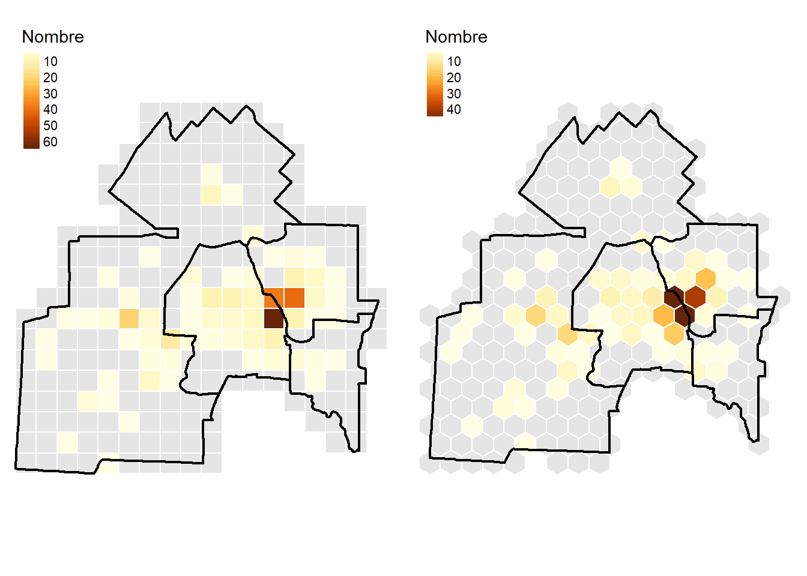
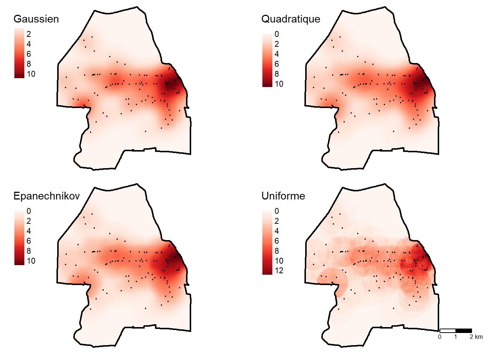
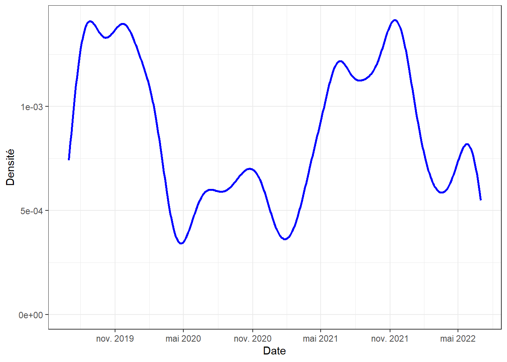

| Ville | Population | Stations de métro | Densité (stations / 10 000 hab.) |
|---|---|---|---|
| New York | 8 804 000 | 424 | 0,5 |
| Paris | 2 165 000 | 309 | 1,4 |
| Île de Montréal | 2 004 000 | 68 | 0,3 |
3 Méthodes de répartition ponctuelle
Dans ce chapitre, nous abordons les méthodes de répartition ponctuelle qui permettent de décrire un semis de points dans un espace géographique donné. En géomatique appliquée, ces méthodes sont fréquemment employées dans le cadre d’études rattachées à des champs disciplinaires variés comme :
- En études urbaines, pour décrire la répartition de services et d’équipements collectifs à travers une ville afin de vérifier s’ils sont équitablement répartis ou à l’inverse, concentrés dans certaines parties de la ville.
- En biologie, pour décrire la répartition d’espèces fauniques ou végétales dans un territoire.
- En criminologie, pour analyser la répartition spatiale d’un ou de plusieurs types de crimes.
- En épidémiologie, pour comprendre l’évolution de la répartition spatiale des cas d’une maladie infectieuse.
- En transport, pour analyser la répartition d’accidents.
- Et même en sciences de l’activité physique, pour analyser la distribution spatiale de personnes pratiquant un sport sur un terrain de soccer, de rugby, de tennis, de baseball, etc.
Liste des packages utilisés dans ce chapitre
- Pour importer et manipuler des fichiers géographiques :
-
sfpour importer et manipuler des données vectorielles.
-
- Pour construire des cartes et des graphiques :
-
tmappour construire des cartes thématiques. -
ggplot2est un package pour construire des graphiques.
-
- Pour les analyses de méthodes de répartition ponctuelle :
-
spatstatest sans aucun doute le meilleur package. -
sparrpour calculer la STKDE, soit l’estimation de la densité par noyau spatio-temporel (Space-Time Kernel density Estimatation).
-
Pour décrire la distribution d’un semis de points, nous voyons les méthodes suivantes :
- La fréquence et la densité des points dans l’espace d’étude.
- L’analyse centrographique :
- Paramètres de tendance centrale (centre moyen et point central).
- Dispersion du semis de points (distance standard) et ses différentes représentations graphiques (cercle et ellipse de distance standard).
- L’arrangement spatial du semis de points :
- Méthode du plus proche voisin.
- Méthode des quadrats.
- La cartographie de la densité :
- Dans une maille irrégulière (des polygones de forme et de taille différentes).
- Dans une maille régulière (estimation de la densité par noyau – kernel density estimation, KDE).
3.1 Fréquence et densité des points dans l’espace d’étude
La fréquence est tout simplement le nombre de points présents dans une région donnée (par exemple, le nombre d’hôpitaux, de stations de métro, d’arbres, etc.). La densité est le ratio entre la fréquence et la superficie totale de la région donnée ou la population.
Par exemple, le tableau 3.1 renvoie le nombre et la densité des stations de métro (pour 10 000 habitants) pour trois villes. Interprétez ces chiffres avec prudence, car ils varient en fonction de la taille du territoire retenu pour les trois villes.
3.2 Analyse centrographique
L’analyse centrographique est une approche qui a été largement utilisée durant les décennies 1990 et 2000. Son utilisation est parfois critiquée pour deux raisons principales : 1) elle ne décrit que partiellement le semis de points; 2) aucun test d’inférence n’est calculé. Quoi qu’il en soit, elle permet d’explorer les données avant de se lancer dans des analyses plus avancées.
Utilisation de l’analyse centrographique au Québec et dans le monde francophone
Marius Thériault (géographe et professeur émérite à l’Université Laval) a largement contribué à la popularité de l’analyse centrographique au Québec et ailleurs. Il est le créateur de MapStat, un module développé avec le langage MapBasic intégré dans le logiciel SIG MapInfo permettant de réaliser une analyse centrographique avant même qu’elle soit implémentée dans ArcGIS. En guise d’exemple, les études suivantes utilisent l’analyse centrographique calculée avec MapStat (López Castro, Thériault et Vandersmissen 2015; Barbonne, Villeneuve et Thériault 2007). Consultez-les au besoin.
3.2.1 Paramètres de tendance centrale d’un semis de points
Les deux principaux paramètres de tendance centrale d’un semis de points sont le centre moyen et le point central qui peuvent être on non pondérés.
3.2.1.1 Centre moyen
Le centre moyen (\(cm\)) est le centre de gravité du semis de points et correspond aux valeurs des moyennes arithmétiques des coordonnées géographiques (équation 3.1).
\[ (\bar{x}_{cm}, \bar{y}_{cm}) = \Biggl( \frac{\Sigma_{i=1}^n x_i}{n}, \frac{\Sigma_{i=1}^n y_i}{n}\Biggl)\text{ avec :} \tag{3.1}\]
- \((\bar{x}_{cm}, \bar{y}_{cm})\), les coordonnées géographiques du point moyen.
- \(n\), le nombre de points dans la couche géographique.
- \(x_i\) et \(y_j\), les coordonnées géographiques du point \(i\).
Il est possible de calculer le centre moyen en pondérant chacun des points du semis avec la valeur d’une variable donnée (équation 3.2). Ainsi, l’importance accordée à chacun des points n’est pas la même. Par exemple, nous pourrions calculer le centre moyen pondéré (\(cmp\)) des cliniques médicales d’une ville en pondérant chaque clinique par le nombre de médecins, ou encore le point moyen des hôpitaux pondéré par le nombre de lits. Autre exemple, avec un jeu de données sur les arbres dans une érablière, nous pourrions utiliser une pondération basée sur le diamètre à la hauteur de la poitrine (DHP) afin d’accorder un poids plus important aux arbres de plus « grand volume ».
Moyenne pondérée
Pour un rappel sur le calcul d’une moyenne pondérée, consultez la section intitulée Statistiques descriptives pondérées (Apparicio et Gelb 2022).
\[ (\bar{x}_{cmp}, \bar{y}_{cmp}) = \Biggl( \frac{\Sigma_{i=1}^n w_ix_i}{\Sigma_{i=1}^nw_i}, \frac{\Sigma_{i=1}^n w_iy_i}{\Sigma_{i=1}^nw_i}\Biggl) \text{ avec :} \tag{3.2}\]
- \(n\), \(x_i\) et \(y_j\) étant définis plus haut.
- \((\bar{x}_w, \bar{y}_w)\), les coordonnées géographiques du point moyen pondéré.
- \(w_i\), la valeur de pondération associée au point \(i\).
Le centre moyen et le centre moyen pondéré sont des mesures très utiles pour comparer la distribution de plusieurs semis de points (de différents services et équipements collectifs par exemple) ou encore pour décrire l’évolution dans le temps de la répartition d’un semis de points. L’analyse du déplacement du centre moyen (pondéré) à différentes dates nous informe ainsi de l’évolution du phénomène à l’étude et plus spécifiquement, de son orientation et de sa direction.
Exemple d’utilisation temporelle du centre moyen pondéré
Un exemple classique d’utilisation du centre moyen pondéré sur plusieurs années est l’évolution du centre moyen pondéré de la population des États-Unis de 1790 à 2020. Il est calculé à partir des centroïdes des comtés américains et de la population comme variable de pondération extraite des recensements de l’US Census Bureau. Bien entendu, le centre moyen pondéré se déplace vers l’ouest.
Vous pouvez consulter cette carte ou visionner cette courte vidéo YouTube ludique.
Notez que les centres moyen et moyen pondéré peuvent aussi être calculés sur des données géographiques comprenant des valeurs d’élévation (\(x,y,z\)) :
\[ (\bar{x}_{cm}, \bar{y}_{cm}, \bar{z}_{cm}) = \Biggl( \frac{\Sigma_{i=1}^n x_i}{n}, \frac{\Sigma_{i=1}^n y_i}{n}, \frac{w_i\Sigma_{i=1}^n z_i}{n}\Biggl) \tag{3.3}\]
\[ (\bar{x}_{cmp}, \bar{y}_{cmp}, \bar{z}_{cmp}) = \Biggl( \frac{w_i\Sigma_{i=1}^n x_i}{\Sigma_{i=1}^nw_i}, \frac{w_i\Sigma_{i=1}^n y_i}{\Sigma_{i=1}^nw_i}, \frac{w_i\Sigma_{i=1}^n z_i}{\Sigma_{i=1}^nw_i}\Biggl) \tag{3.4}\]
3.2.1.2 Point central
Le point central d’un semis de points est celui qui minimise la somme des distances le séparant de tous les autres points (équation 3.5). Tout comme le point moyen, il est aussi possible de calculer le point central pondéré (équation 3.6).
\[ pc=\text{Min}\Biggl(\Sigma_{i=1}^n \sqrt{(x_i-x_j)^2+(y_i-y_j)^2}\Biggl)\text{; avec }i \ne j \tag{3.5}\]
\[ pcp=\text{Min}\Biggl(\Sigma_{i=1}^n w_i \sqrt{(x_i-x_j)^2+(y_i-y_j)^2}\Biggl)\text{; avec }i \ne j \tag{3.6}\]
Différence entre point central et centre moyen
Contrairement au centre moyen, le point central fait partie du semis de points initial.
Utilité du point central pondéré
Imaginez que des personnes étudiantes en géographie et en géomatique de toutes les universités du Québec souhaitent organiser une rencontre en présence. Calculer le point central, pondéré par le nombre de personnes étudiantes par établissement participant à la rencontre, permet d’identifier l’université la plus centrale. Idéalement, il faudrait obtenir ce point central pondéré avec les distances temps calculées avec un réseau routier.
3.2.2 Paramètres de dispersion d’un semis de points
Les deux principaux paramètres de dispersion d’un semis de points sont la distance standard et la distance standard pondérée. La dispersion d’un semis de points peut être représentée graphiquement avec une enveloppe convexe, un cercle de rayon de standard ou une ellipse (avec ou sans pondération).
3.2.2.1 Distance standard et distance standard pondérée
En statistique univariée, l’écart-type (équation 3.7) est une mesure de dispersion bien connue : plus la valeur de l’écart-type est élevée, plus la dispersion des valeurs de la variable autour de la moyenne (\(\mu\)) est importante.
\[ \sigma=\sqrt{\frac{\sum_{i=1}^n (x_{i}-\mu)^2}{n}} \tag{3.7}\]
Écart-type
Pour un rappel sur l’écart-type, consultez la section intitulée Paramètres de dispersion (Apparicio et Gelb 2022).
Distance standard (pondérée ou non) des X et des Y
De manière analogue à l’écart-type, nous pouvons calculer la distance standard pour les coordonnées X et pour les coordonnées Y des points, soit l’écart moyen respectif au centre moyen (équation 3.8) ou au centre moyen pondéré (équation 3.9).
\[ \sigma_x=\sqrt{\frac{\sum_{i=1}^n (x_{i}-\bar{x}_{cm})^2}{n}} \text{ et } \sigma_y=\sqrt{\frac{\sum_{i=1}^n (y_{i}-\bar{y}_{cm})^2}{n}} \tag{3.8}\]
\[ \sigma_{xw}=\sqrt{\frac{\sum_{i=1}^n w_i(x_{i}-\bar{x}_{cmp})^2}{\sum_{i=1}^n{w_i}}} \text{ et } \sigma_{yw}=\sqrt{\frac{\sum_{i=1}^n w_i(y_{i}-\bar{y}_{cmp})^2}{\sum_{i=1}^n{w_i}}} \tag{3.9}\]
Distance standard (pondérée ou non)
Nous pouvons aussi calculer la distance standard (\(ds\)) sans pondération (équation 3.10) et avec pondération (équation 3.11). Plus elle est forte, plus les points sont dispersés autour du centre moyen ou du centre moyen pondéré. Inversement, une faible distance standard indique une concentration de points autour du centre moyen.
\[ ds=\sqrt{\frac{\sum_{i=1}^n (x_{i}-\bar{x}_{cm})^2}{n} + \frac{\sum_{i=1}^n (y_{i}-\bar{y}_{cm})^2}{n}} \tag{3.10}\]
\[ ds_w=\sqrt{\frac{\sum_{i=1}^n w_i(x_{i}-\bar{x}_{cmp})^2}{\sum_{i=1}^n w_i} + \frac{\sum_{i=1}^n w_i(y_{i}-\bar{y}_{cmp})^2}{\sum_{i=1}^n w_i}} \tag{3.11}\]
De nouveau, ces mesures peuvent être adaptées pour des points avec une élévation (\(x,y,z\)) :
\[ ds=\sqrt{\frac{\sum_{i=1}^n (x_{i}-\bar{x}_{cm})^2}{n} + \frac{\sum_{i=1}^n (y_{i}-\bar{y}_{cm})^2}{n} + \frac{\sum_{i=1}^n (z_{i}-\bar{z}_{cm})^2}{n}} \tag{3.12}\]
\[ ds_w=\sqrt{\frac{\sum_{i=1}^n w_i(x_{i}-\bar{x}_{cmp})^2}{\sum_{i=1}^n w_i} + \frac{\sum_{i=1}^n w_i(y_{i}-\bar{y}_{cmp})^2}{\sum_{i=1}^n w_i} + \frac{\sum_{i=1}^n w_i(z_{i}-\bar{z}_{cmp})^2}{\sum_{i=1}^n w_i}} \tag{3.13}\]
3.2.2.2 Représenter la dispersion : cercle de distance standard et ellipse
La dispersion d’un semis de points peut être représentée de quatre manières différentes :
Une enveloppe convexe des points décrite à la section 1.2.2.5).
Un rectangle centré sur le centre moyen avec les déviations des coordonnées X et Y pondérées ou non (équation 3.8 et équation 3.9 décrites précédemment). Dans le cas de données comprenant l’élévation, la forme géométrique est un parallélépipède rectangle.
Un cercle de rayon de distance standard pondérée ou non (équation 3.10 et équation 3.11) décrites précédemment). Dans le cas de données comprenant l’élévation, la forme géométrique est une sphère de rayon de distance standard.
Une ellipse de distance standard pondérée ou non. Dans le cas de données comprenant l’élévation, la forme géométrique est un ellipsoïde.
Prenons un jeu de données fictives pour décrire ces quatre représentations graphiques. Imaginons que nous avons observé le parc de la Laurentie à Sherbrooke pour comprendre son utilisation. Pour collecter des données sur la localisation des personnes utilisatrices, nous aurions pu utiliser un questionnaire dans QField ou ArcGIS Survey 123. La figure 3.1 illustre la localisation de dix personnes (points rouges).

À partir de ces dix points, nous obtenons :
Les coordonnées du centre moyen qui sont égales à -8 007 869 et 5 685 921, soit simplement les moyennes des coordonnées X et Y des dix observations.
L’enveloppe convexe des points qui contient tous les points.
Le rectangle construit avec les déviations standards des X et des Y qui est centré sur le centre moyen. À partir de ce point, nous ajoutons à l’est et à l’ouest la valeur de la distance standard des X et au nord et au sud celle des Y. Les valeurs de ces distances standards sont égales à 32,60 et 52,20 mètres (voir les calculs au tableau 3.2).
La distance standard est égale à 61,59 mètres (voir les calculs au tableau 3.2). À partir de cette distance, nous traçons le cercle ayant comme rayon la distance standard.
L’ellipse de déviation de distance standard (figure 3.2).
| Point | \(x_i\) | \(y_i\) | \((x_{i}-\bar{x}_{cm})^2\) | \((y_{i}-\bar{y}_{cm})^2\) | \((x_{i}-\bar{x}_{cm})^2+\)\((y_{i}-\bar{y}_{cm})^2\) |
|---|---|---|---|---|---|
| 1 | -8007877 | 5686000 | 52,80 | 6347,70 | 6400,50 |
| 2 | -8007843 | 5685993 | 716,90 | 5298,00 | 6014,90 |
| 3 | -8007836 | 5685976 | 1082,00 | 3046,30 | 4128,30 |
| 4 | -8007859 | 5685928 | 98,90 | 60,30 | 159,20 |
| 5 | -8007911 | 5685935 | 1770,20 | 214,60 | 1984,80 |
| 6 | -8007913 | 5685871 | 1934,80 | 2461,00 | 4395,80 |
| 7 | -8007888 | 5685855 | 365,70 | 4363,40 | 4729,10 |
| 8 | -8007835 | 5685857 | 1185,00 | 4016,80 | 5201,80 |
| 9 | -8007824 | 5685886 | 2071,70 | 1203,50 | 3275,20 |
| 10 | -8007906 | 5685904 | 1376,50 | 266,70 | 1643,30 |
| n | 10 | ||||
| Somme | -80078693 | 56859207 | 10654,50 | 27278,30 | 37932,80 |
| Moyenne | -8007869 | 5685921 | 1065,45 | 2727,83 | 3793,28 |
| Racine carrée | 32,60 | 52,20 | 61,59 |

Calcul des ellipses : des résultats qui varient d’un logiciel à l’autre…
Il existe plusieurs solutions pour tracer une ellipse. Pour une discussion détaillée de ces différentes solutions, lisez le court texte très intéressant de Martin Leroux.
Ellipse de Yuill (Tveite 2020).
Ellipse basée sur la covariance implémentée dans ArcGIS Pro.
Ellipse de distance standard implémentée dans le logiciel CrimeStat.
Ellipse avec la correction proposée par Wang et ses collègues (2015).
Notez qu’un plugin QGIS nommé The QGIS Standard Deviational Ellipse Plugin (Tveite 2020) intègre plusieurs de ces méthodes. Les résultats varient ainsi d’un logiciel à l’autre selon la méthode implémentée. Autrement dit, pour un même jeu de données ponctuelles, les ellipses obtenues avec ArcGIS Pro, ArcMap 9.3, ArcMap 10.x et QGIS seront différentes.
Quoi faire alors?
Quelle que soit la méthode utilisée, l’ellipse est toujours centrée sur le point moyen et a toujours le même angle de rotation. Par contre, la taille de l’ellipse (superficie) varie. Par conséquent, si vous souhaitez comparer des ellipses différentes, assurez-vous toujours qu’elles sont toutes obtenues dans le même logiciel et avec la même solution.
Calcul de l’ellipse selon la méthode implémentée dans CrimeStat
Ned Levine (2006; 2021), créateur du logiciel CrimeStat, propose les formulations suivantes pour le calcul d’une ellipse :
\[ \theta = \frac{\text{arctan} \Biggl\{ \Bigl(\sum_{i=1}^nx_d^2-\sum_{i=1}^ny_d^2 \Bigl)+ \Bigr[\Bigl(\sum_{i=1}^nx_d^2-\sum_{i=1}^ny_d^2 \Bigl)^2 + 4 \Bigl(\sum_{i=1}^nx_dy_d \Bigl)^2\Bigr]^{1/2} \Biggl\}} {2 \sum_{i=1}^nx_dy_d} \tag{3.14}\]
avec \(\theta\) est la rotation de l’ellipse, \(x_d = x_i-\bar{x}\) et \(y_d = y_i-\bar{y}\).
\[ \sigma_x =\sqrt{2\times \frac{\sum_{i=1}^n\Bigl((x_i-\bar{x}) \text{cos}\theta-(y_i-\bar{y})\text{sin}\theta\Bigl)^2}{n-2}} \tag{3.15}\]
\[ \sigma_y =\sqrt{2\times \frac{\sum_{i=1}^n\Bigl((x_i-\bar{x}) \text{sin}\theta-(y_i-\bar{y})\text{cos}\theta\Bigl)^2}{n-2}} \tag{3.16}\]
\[ l_x=2\sigma_x \text{ et }l_y=2\sigma_y \text{ et }S_e=\pi\sigma_x\sigma_y \tag{3.17}\]
avec \(l_x\), \(l_y\) et \(S_e\) étant les longueurs de axes X et Y et la superficie de l’ellipse.
Prenons quatre situations fictives de répartition de dix personnes utilisatrices du parc de la Laurentie à Sherbrooke :
- Situation A. Les observations sont concentrées autour de l’aire de jeu.
- Situation B. Les observations sont dispersées dans la partie est du parc.
- Situation C. Les observations sont concentrées dans la partie nord du parc.
- Situation D. Les observations sont concentrées dans la partie nord du parc, excepté deux observations au sud.

Les cercles et les ellipses de distance standard (\(ds\)) centrés au centre moyen (\(cm\)) sont représentés à la (figure 3.4).

3.2.2.3 Comparaison de la dispersion de deux semis de points dans deux régions différentes
Pour comparer la dispersion de deux semis de points situés dans des régions de taille différente, il convient de supprimer les effets de taille des deux régions. Pour ce faire, nous divisons la distance standard ou la distance standard pondérée par la superficie de la région. Cette approche est donc très similaire au coefficient de variation en statistique univariée, soit le rapport entre l’écart-type et la moyenne.
Par exemple, si nous comparons les dispersions des personnes utilisatrices du parc de la Laurentie (0,078 ha) et parc du Mont-Bellevue (409 ha). Inévitablement, la valeur de la distance standard est plus forte pour le parc du Mont-Bellevue que celle du parc de la Laurentie. Il faut donc diviser chaque distance standard par la superficie associée.
3.2.2.4 Comparaison de la dispersion de deux semis de points dans la même région
Pour comparer la distribution spatiale de deux semis de points situés dans la même région, nous comparons leur cercle ou leur ellipse respective (par exemple, des points représentant des accidents l’été versus l’hiver ou encore deux espèces végétales sur le même territoire).
Une démarche similaire peut être appliquée à deux groupes de population rattachés à des entités polygonales : ils ont la même distribution spatiale si les deux ellipses de distance pondérée se juxtaposent significativement. David W.S. Wong (1999) propose d’ailleurs un indice dénommé S basé sur la comparaison des deux ellipses (équation 3.18). Le numérateur représente la surface d’intersection entre les deux ellipses tandis que le dénominateur représente leur surface d’union. L’indice varie de 0 à 1, soit respectivement d’une similitude parfaite à une dissemblance la plus grande entre les deux distributions spatiales :
Si deux groupes de population ont des distributions spatiales identiques, les ellipses sont les mêmes et donc \(E_i \cap E_j = E_i \cup E_j = 1\) et \(S_{ij} = 1 - 1 = 0\).
Si les deux groupes de population ont des distributions spatiales totalement différentes, les ellipses ne se touchent pas, alors \(E_i \cap E_j = 0\) et la valeur de \(S = 1 - 0 = 1\).
Bien évidemment, cet indice peut être étendu pour comparer les distributions de plus de deux groupes de population simultanément (équation 3.19).
\[ S_{ij}=1-\frac{E_i \cap E_j}{E_i \cup E_j} \tag{3.18}\]
\[ S=1-\frac{E_1 \cap E_2 \cap E_3 \cap \text{…} \cap E_n}{E_1 \cup E_2 \cup E_3 \cup \text{…} \cup E_n} \tag{3.19}\]
Voyons un exemple concret : calculons l’indice de Wong (1999) (équation 3.18) pour les ellipses de distances standards pondérées par les effectifs de propriétaires et de locataires par secteur de recensement pour la ville de Sherbrooke en 2021 (figure 3.5). D’emblée, nous constatons que les propriétaires ont une distribution plus dispersée que celle des locataires plus présents dans le centre de la ville.
Le code suivant permet d’obtenir l’indice de Wong (1999).
## Importation des deux ellipses
E1 <- st_read(dsn = "data/chap03/EllipseProprio.shp", quiet=TRUE)
E2 <- st_read(dsn = "data/chap03/EllipseLocataire.shp", quiet=TRUE)
## Intersection
Inter <- st_intersection(E1, E2)
## Union
Union <- st_union(E1, E2)
## Calcul de l'indice de Wong
Wong <- 1 - ( as.numeric(st_area(Inter)) / as.numeric(st_area(Union)))
print(paste0("Valeur de l'indice de Wong : ",round(Wong,3)))[1] "Valeur de l'indice de Wong : 0.515"3.2.3 Mise en œuvre de l’analyse centrographique dans R
3.2.3.1 Calcul de mesures non pondérées
Pour illustrer la mise en œuvre des différentes mesures de l’analyse centrographique dans R, nous utilisons un jeu de données ouvertes sur les incidents de sécurité publique de la ville de Sherbrooke. Dans le code ci-dessous, nous importons les données et constituons une couche sf par année (2019 à 2022) et extrayons les coordonnées géographiques.
library(sf)
library(tmap)
## Importation des données
Arrondissements <- st_read(dsn = "data/chap03/Arrondissements.shp", quiet=TRUE)
Incidents <- st_read(dsn = "data/chap03/IncidentsSecuritePublique.shp", quiet=TRUE)
## Changement de projection
Arrondissements <- st_transform(Arrondissements, crs = 3798)
Incidents <- st_transform(Incidents, crs = 3798)
## Extaction des méfaits
Mefaits <- subset(Incidents, DESCRIPTIO == "Méfait")
# Méfaits par année
M2019 <- subset(Mefaits, ANNEE==2019)
M2020 <- subset(Mefaits, ANNEE==2020)
M2021 <- subset(Mefaits, ANNEE==2021)
M2022 <- subset(Mefaits, ANNEE==2022)
# Coordonnées géographiques
xy.2019 <- st_coordinates(M2019)
xy.2020 <- st_coordinates(M2020)
xy.2021 <- st_coordinates(M2021)
xy.2022 <- st_coordinates(M2022)Les méfaits par année sont présentés à la figure 3.6.
Centre moyen
Avec la fonction mean, nous pouvons calculer les valeurs moyennes sur les coordonnées X et Y, puis créer un objet sf avec les centres moyens.
## Récupération de la projection cartographique dans une variable
ProjCarto <- st_crs(Mefaits)
## Calcul du centre moyen pour une année (2019)
print(c(mean(xy.2019[,1]), mean(xy.2019[,2])))[1] 649990.3 157059.3## Calcul pour toutes les années
# vecteur pour les moyennes des X
X.moy <- c(mean(xy.2019[,1]), mean(xy.2020[,1]), mean(xy.2021[,1]), mean(xy.2022[,1]))
# Vecteur pour les moyennes des Y
Y.moy <- c(mean(xy.2019[,2]), mean(xy.2020[,2]), mean(xy.2021[,2]), mean(xy.2022[,2]))
# Enregistrement dans un objet sf
CentreMoyen <- data.frame(Annee = c("2019", "2020", "2021", "2022"),
X = X.moy,
Y = Y.moy,
CMx = X.moy,
CMy = Y.moy)
CentreMoyen <- st_as_sf(CentreMoyen, coords = c("X", "Y"), crs = ProjCarto)
# Affichage des résultats
print(CentreMoyen)Simple feature collection with 4 features and 3 fields
Geometry type: POINT
Dimension: XY
Bounding box: xmin: 649696 ymin: 157059.3 xmax: 650663.7 ymax: 157544.8
Projected CRS: NAD83 / MTQ Lambert
Annee CMx CMy geometry
1 2019 649990.3 157059.3 POINT (649990.3 157059.3)
2 2020 649696.0 157544.8 POINT (649696 157544.8)
3 2021 650663.7 157214.8 POINT (650663.7 157214.8)
4 2022 650442.5 157237.0 POINT (650442.5 157237)Point central
Le code ci-dessous illustre comment identifier le point central, qui fait partie du jeu de données, pour l’année 2019.
## Calcul de la matrice de distances entre les points de l'année 2019
DistMatrice2019 <- as.matrix(dist(xy.2019, method = "euclidean", diag = TRUE, upper = TRUE))
## Somme de chaque ligne de la matrice, soit la somme des distances à tous les autres points
M2019$DistATous <- rowSums(DistMatrice2019)
## Sélection du point avec plus petite distance à tous les autres
PointCentral2019 <- subset(M2019, M2019$DistATous==min(M2019$DistATous))Distance standard sur les coordonnées X et Y et distance standard combinée
Le code ci-dessous permet de calculer les trois distances standards.
## Calcul de la distance standard pour une année (2019)
# Distance standard sur les coordonnées X et Y
c(sqrt(mean((xy.2019[,1] - mean(xy.2019[,1]))^2)),
sqrt(mean((xy.2019[,2] - mean(xy.2019[,2]))^2)))[1] 3732.173 2593.207# Distance standard
sqrt(mean((xy.2019[,1] - mean(xy.2019[,1]))**2 +
(xy.2019[,2] - mean(xy.2019[,2]))**2))[1] 4544.649## Calcul pour toutes les années et enregistrement des centres moyens dans de nouveaux champs
CentreMoyen$DS.X <- c(sqrt(mean((xy.2019[,1] - mean(xy.2019[,1]))^2)),
sqrt(mean((xy.2020[,1] - mean(xy.2020[,1]))^2)),
sqrt(mean((xy.2021[,1] - mean(xy.2021[,1]))^2)),
sqrt(mean((xy.2022[,1] - mean(xy.2022[,1]))^2)))
CentreMoyen$DS.Y <- c(sqrt(mean((xy.2019[,2] - mean(xy.2019[,2]))^2)),
sqrt(mean((xy.2020[,2] - mean(xy.2020[,2]))^2)),
sqrt(mean((xy.2021[,2] - mean(xy.2021[,2]))^2)),
sqrt(mean((xy.2022[,2] - mean(xy.2022[,2]))^2)))
CentreMoyen$DS <- c(sqrt(mean((xy.2019[,1] - mean(xy.2019[,1]))**2 +
(xy.2019[,2] - mean(xy.2019[,2]))**2)),
sqrt(mean((xy.2020[,1] - mean(xy.2020[,1]))**2 +
(xy.2020[,2] - mean(xy.2020[,2]))**2)),+
sqrt(mean((xy.2021[,1] - mean(xy.2021[,1]))**2 +
(xy.2021[,2] - mean(xy.2021[,2]))**2)),+
sqrt(mean((xy.2022[,1] - mean(xy.2022[,1]))**2 +
(xy.2022[,2] - mean(xy.2022[,2]))**2)))
## Visualisation des résultats
head(CentreMoyen)Simple feature collection with 4 features and 6 fields
Geometry type: POINT
Dimension: XY
Bounding box: xmin: 649696 ymin: 157059.3 xmax: 650663.7 ymax: 157544.8
Projected CRS: NAD83 / MTQ Lambert
Annee CMx CMy geometry DS.X DS.Y DS
1 2019 649990.3 157059.3 POINT (649990.3 157059.3) 3732.173 2593.207 4544.649
2 2020 649696.0 157544.8 POINT (649696 157544.8) 4134.913 2393.048 4777.466
3 2021 650663.7 157214.8 POINT (650663.7 157214.8) 3374.821 2294.171 4080.764
4 2022 650442.5 157237.0 POINT (650442.5 157237) 3601.208 2170.215 4204.585Représentations graphiques de la dispersion
Une fois que la couche sf des centres moyens avec les trois champs pour la distance standard est créée, il suffit de tracer un rectangle et un cercle de distance standard.
## Enveloppe convexe
sf.Enveloppes <- st_sf(data.frame(Id=c("2019", "2020", "2021", "2022")),
geometry = c(st_convex_hull(st_union(M2019)),
st_convex_hull(st_union(M2020)),
st_convex_hull(st_union(M2021)),
st_convex_hull(st_union(M2022))))
## Rectangle avec les distances standards sur les coordonnées X et Y
#' Fonction pour tracer le rectangle
#' @param MoyX coordonnées X du centre moyen.
#' @param MoyY coordonnées Y du centre moyen.
#' @param SDx distance standard sur les coordonnées X.
#' @param SDy distance standard sur les coordonnées Y.
#' @param crs projection cartographique.
CreationRec <- function(MoyX, MoyY, SDx, SDy, ProjCarto){
pt1 = c(MoyX - SDx, MoyY - SDy)
pt2 = c(MoyX - SDx, MoyY + SDy)
pt3 = c(MoyX + SDx, MoyY + SDy)
pt4 = c(MoyX + SDx, MoyY - SDy)
Rectangle = st_polygon(list(rbind(pt1, pt2, pt3, pt4, pt1)))
Rectangle = st_sfc(Rectangle)
st_crs(Rectangle) = ProjCarto
return(Rectangle)
}
MoyX <- CentreMoyen$CMx
MoyY <- CentreMoyen$CMy
SDx <- CentreMoyen$DS.X
SDy <- CentreMoyen$DS.Y
sf.Rectangles <- st_sf(data.frame(Id=c("2019", "2020", "2021", "2022")),
geometry = c(CreationRec(MoyX[1], MoyY[1], SDx[1], SDy[1], ProjCarto),
CreationRec(MoyX[2], MoyY[2], SDx[2], SDy[2], ProjCarto),
CreationRec(MoyX[3], MoyY[3], SDx[3], SDy[3], ProjCarto),
CreationRec(MoyX[4], MoyY[4], SDx[4], SDy[4], ProjCarto)))
## Cercle de distance standard avec la fonction st_buffer
sf.CercleDS <- st_buffer(CentreMoyen, dist = CentreMoyen$DS)Le calcul de l’ellipse est un peu plus complexe. Par conséquent, nous avons écrit deux fonctions :
CreateEllipsequi construit une ellipse à partir d’une couchesfde points.CreateEllipse_gpqui construit des ellipses à partir d’une couchesfde points en fonction d’une colonne indiquant différents groupes de points (ici, les différentes années).
## Appel des deux fonctions dans le fichier ellipses.R
source("code_complementaire/ellipses.R")
## Création d'une ellipse pour une année
sf.Ellipse2019 <- CreateEllipse(M2019)
## Création de plusieurs ellipses regroupées selon les différentes années
sf.Ellipse <- CreateEllipse_gp(points = Mefaits, group = "ANNEE")
head(sf.Ellipse)Simple feature collection with 4 features and 12 fields
Geometry type: POLYGON
Dimension: XY
Bounding box: xmin: 643833.8 ymin: 153377.3 xmax: 655559 ymax: 160937.9
Projected CRS: NAD83 / MTQ Lambert
CMx CMy Sigmax Sigmay Lx Ly Aire Theta
1 649990.3 157059.3 3055.157 5683.790 6110.315 11367.580 54553357 64.60944
2 649696.0 157544.8 3154.712 5994.647 6309.423 11989.294 59411858 75.81068
3 650663.7 157214.8 3128.891 4869.299 6257.783 9738.598 47863757 76.14675
4 650442.5 157237.0 2540.594 5406.184 5081.187 10812.368 43149511 68.52718
ThetaCorr Major Minor geometry ANNEE
1 64.60944 SigmaY SigmaX POLYGON ((655125.1 159496.4... 2019
2 75.81068 SigmaY SigmaX POLYGON ((655507.7 159014.3... 2020
3 76.14675 SigmaY SigmaX POLYGON ((655391.4 158380.7... 2021
4 68.52718 SigmaY SigmaX POLYGON ((655473.5 159216, ... 2022Les quatre représentations de la dispersion sont présentées à la figure 3.7 : 1) enveloppe convexe (gris), 2) cercle de distance standard (bleu), 3) rectangle de distance standard sur les X et Y (noir) et 4) ellipse de distance standard (rouge).
3.2.3.2 Calcul de mesures pondérées
Pour illustrer le calcul des mesures pondérées, nous utilisons des données sur les effectifs des premier et dernier déciles de revenu après impôt des familles économiques pour les secteurs de recensement de la ville de Sherbrooke en 2021 (figure 3.8).
Le code suivant permet d’importer et de structurer les données, puis de calculer les différentes mesures (centre moyen pondéré et distance standard pondérée).
## Importation et structuration des données
dfdecile <- read.csv("data/chap03/DataDecilesSR.csv", header = TRUE, sep = ",")
dfdecile$SRIDU <- substr(dfdecile$SRIDU, 1, 10)
SR <- st_read(dsn = "data/chap03/Recen2021Sherbrooke.gpkg",
layer = "DR_SherbSRDonnees2021", quiet=TRUE)
SR <- merge(SR[,c("SRIDU")], dfdecile, by = "SRIDU")
ProjCarto <- st_crs(SR)
## Coordonnées géographiques des secteurs de recensement
xy <- st_coordinates(st_point_on_surface(SR))
## Pondérations pour les deux déciles
wd1 <- SR$D1
wd10 <- SR$D10
## Sommes des pondérations
swd1 <- sum(wd1)
swd10 <- sum(wd10)
## Calcul du centre pondéré
XmoyD1 <- sum(xy[,1]*wd1) / swd1
XmoyD10 <- sum(xy[,1]*wd10) / swd10
YmoyD1 <- sum(xy[,2]*wd1) / swd1
YmoyD10 <- sum(xy[,2]*wd10) / swd10
CentreMoyenPond <- data.frame(Decile = c("Premier", "Dernier"),
X = c(XmoyD1, XmoyD10),
Y = c(YmoyD1, YmoyD10),
CMwx = c(XmoyD1, XmoyD10),
CMwy = c(YmoyD1, YmoyD10))
CentreMoyenPond <- st_as_sf(CentreMoyenPond, coords = c("X", "Y"), crs = ProjCarto)
## Calcul de la distance standard pondérée
sdD1 <- sqrt((sum(wd1*(xy[,1]- XmoyD1)^2) / swd1) + (sum(wd1*(xy[,2]- YmoyD1)^2) / swd1))
sdD10 <- sqrt((sum(wd10*(xy[,1]- XmoyD10)^2) / swd1) + (sum(wd10*(xy[,2]- YmoyD10)^2) / swd10))
## Zones tampons avec la distance standard pondérée
CentreMoyenPond$SDw <- c(sdD1, sdD10)
sf.CercleDSW <- st_buffer(CentreMoyenPond, dist = CentreMoyenPond$SDw)
## Calcul de l'ellipse pondérée pour le premier décile
SR.points <- st_point_on_surface(SR)
ellipse.D1 <- CreateEllipse(SR.points, w = SR.points$D1)
ellipse.D10 <- CreateEllipse(SR.points, w = SR.points$D10)
# Carte 1 : premier décile
Carte1 = tm_shape(SR)+
tm_polygons(col="whitesmoke", border.col = "grey30", lwd = 1)+
tm_shape(CentreMoyenPond[1,])+
tm_dots(size = .5, col="black")+
tm_shape(sf.CercleDSW[1,])+
tm_borders(col="blue", lwd = 2)+
tm_shape(ellipse.D1)+
tm_borders(col="red", lwd = 2)+
tm_layout(main.title = "A. Premier décile (le plus pauvre)",
main.title.size = .9, frame = FALSE)
# Carte 2 : dernier décile
Carte2 = tm_shape(SR)+
tm_polygons(col="whitesmoke", border.col = "grey30", lwd = 1)+
tm_shape(CentreMoyenPond[2,])+
tm_dots(size = .5, col="black")+
tm_shape(sf.CercleDSW[2,])+
tm_borders(col="red", lwd = 2)+
tm_shape(ellipse.D10)+
tm_borders(col="blue", lwd = 2)+
tm_layout(main.title = "B. Dernier décile (le plus riche)",
main.title.size = .9, frame = FALSE)+
tm_credits("Source : recensement de 2021, Statistique Canada\nAuteur : Jéremy Lécartemplace.",
position = c("right", "bottom"), size = 0.7, align = "right")
# Combinaison des deux cartes
tmap_arrange(Carte1, Carte2, ncol = 2, nrow = 1)3.3 Forme d’un semis de points
Étudier la forme d’un semis de points, c’est vouloir décrire l’arrangement spatial et l’espacement des points dans une région donnée. Autrement dit, l’objectif est de répondre à la question suivante : comment se répartissent les points dans une région donnée? Nous distinguons habituellement trois types de distribution spatiale d’un semis de points (figure 3.10) :
- Distribution dispersée quand les points du semis sont régulièrement espacés.
- Distribution aléatoire quand la distribution des points n’est nullement guidée par des considérations géographiques. Autrement dit, chaque point du semis a la même probabilité d’être situé dans n’importe quelle partie de la zone d’étude.
- Distribution concentrée quand il existe des regroupements de points dans une ou plusieurs parties de la région d’étude. Par exemple, les musées et les théâtres sont habituellement concentrés dans les parties centrales des métropoles.

Deux grandes familles pour décrire la forme d’un semis de points
- Celles basées sur la distance (l’indice du plus proche voisin, fonctions K et L de Ripley) (section 3.3.1).
- Celles basées sur la densité (méthode des quadrats avec différents tests statistiques) (section 3.3.2).
3.3.1 Méthode du plus proche voisin
Le principe de base de cette méthode est fort simple et se décompose en quatre étapes :
Mesurer, pour chaque point du semis, la distance le séparant du point le plus proche, puis calculer la distance moyenne du point le plus proche (équation 3.20).
Calculer la moyenne attendue du point le plus proche pour une dispersion aléatoire (équation 3.22).
-
Calculer l’indice du plus proche voisin, soit le ratio entre la distance observée et la distance aléatoire (équation 3.21). L’indice R s’interprète alors comme suit :
- Si R est égal à 1, la dispersion du semis de points est aléatoire.
- Si R est inférieur à 1, la distribution du semis de points tend vers la concentration (avec une concentration absolue quand R = 0; tous les points ont les mêmes coordonnées géographiques).
- Si R est supérieur à 1, la distribution du semis de points tend vers la dispersion.
Calculer les valeurs de Z et de p pour déterminer si la valeur de R obtenue est significative (équation 3.23).
\[ R_{o}= \frac{\sum_{i=1}^n d_i}{n} \tag{3.20}\]
\[ R_{a}= \frac{1}{2 \sqrt{(n/S)}} \tag{3.21}\]
\[ R = \frac{R_{o}}{R_{a}} \tag{3.22}\]
\[ Z = \frac{R_o-R_a}{SE} \text{, } SE = \frac{0.26136}{\sqrt{(n^2/S)}} \text{ avec :} \tag{3.23}\]
- \(n\), nombre de points.
- \(d_i\), distance séparant le point i de son voisin le plus proche.
- \(S\), superficie de l’espace d’étude.
Le code ci-dessous permet de mettre en œuvre la méthode du plus proche voisin pour les méfaits pour les quatre années.
library(spatstat)
library(ggplot2)
## Indice du plus proche voisin : R observé (équation 3.20)
# le paramètre k indique le nombre de plus proches voisins
Robs2019 <- mean(nndist(st_coordinates(M2019),k=1))
Robs2020 <- mean(nndist(st_coordinates(M2020),k=1))
Robs2021 <- mean(nndist(st_coordinates(M2021),k=1))
Robs2022 <- mean(nndist(st_coordinates(M2022),k=1))
## Indice du plus proche voisin : R attendu (distribution aléatoire) (équation 3.21)
# Attention, il faut spéficier S, la superficie de l'espace d'étude
Arrondissements <- st_read(dsn = "data/chap03/Arrondissements.shp", quiet=TRUE)
Arrondissements <- st_transform(Arrondissements, crs = 3798)
S <- as.numeric(st_area(st_union(Arrondissements)))
# Nombre de points par année
N2019 <- nrow(M2019)
N2020 <- nrow(M2020)
N2021 <- nrow(M2021)
N2022 <- nrow(M2022)
# Calcul de Ra
Ra2019 <- 1 / (2 * sqrt(N2019 / S))
Ra2020 <- 1 / (2 * sqrt(N2020 / S))
Ra2021 <- 1 / (2 * sqrt(N2021 / S))
Ra2022 <- 1 / (2 * sqrt(N2022 / S))
## Calculons le R
# Création d'un DataFrame
IndicePPV <- data.frame(id = c("2019", "2020", "2021", "2022"),
points = c(N2019, N2020, N2021, N2022),
Superficie = c(S, S, S, S),
Robs = c(Robs2019, Robs2020, Robs2021, Robs2022),
Rattendu = c(Ra2019, Ra2020, Ra2021, Ra2022))
# Calcul du R (équation 3.22)
IndicePPV$R <- IndicePPV$Robs / IndicePPV$Rattendu
# Calcul du Z (équation 3.23)
IndicePPV$SE <- 0.26136 / sqrt(IndicePPV$points^2 / IndicePPV$Superficie)
IndicePPV$Z <- (IndicePPV$Robs - IndicePPV$Rattendu) / IndicePPV$SE
IndicePPV$P <- round(2*pnorm(q=abs(IndicePPV$Z), lower.tail=FALSE),3)
print(IndicePPV) id points Superficie Robs Rattendu R SE Z P
1 2019 251 366358191 251.5498 604.0684 0.4164260 19.93051 -17.68739 0
2 2020 383 366358191 183.9866 489.0166 0.3762380 13.06151 -23.35335 0
3 2021 344 366358191 227.1881 515.9929 0.4402931 14.54232 -19.85961 0
4 2022 220 366358191 251.3347 645.2256 0.3895299 22.73890 -17.32234 0Interprétation des résultats
Analysons les différentes colonnes du tableau 3.3 :
points (n) : il y a respectivement 251, 383, 344 et 220 méfaits pour les années 2019 à 2022.
R observé : en moyenne, un méfait est distant de 252, 184, 227 et 251 mètres du méfait le plus proche pour les quatre années.
R attendu : pour une distribution aléatoire, un méfait devrait être distant du méfait le plus proche de 604, 489, 516, et 645 mètres.
Indice du plus proche voisin : toutes les valeurs sont inférieures à 1, indiquant des distributions spatiales concentrées. La concentration est la plus forte pour l’année 2020 (R = 0,376).
valeur de p : toutes les valeurs sont égales à 0, signalant que les résultats sont significatifs.
| Année | points (n) | R observé | R attendu | Indice plus proche voisin | Erreur standard | Z | p |
|---|---|---|---|---|---|---|---|
| 2019 | 251 | 252 | 604 | 0,416 | 19,931 | -17,687 | 0 |
| 2020 | 383 | 184 | 489 | 0,376 | 13,062 | -23,353 | 0 |
| 2021 | 344 | 227 | 516 | 0,440 | 14,542 | -19,860 | 0 |
| 2022 | 220 | 251 | 645 | 0,390 | 22,739 | -17,322 | 0 |
Notez qu’il est possible aussi de construire un graphique pour le R observé avec plusieurs voisins, tel que réalisé avec le code ci-dessous avec k = 1 à 50 (figure 3.11).
# k = 1 à 50
Robs2019N1_50 <- apply(nndist(st_coordinates(M2019), k=1:50), 2, FUN=mean)
Robs2020N1_50 <- apply(nndist(st_coordinates(M2020), k=1:50), 2, FUN=mean)
Robs2021N1_50 <- apply(nndist(st_coordinates(M2021), k=1:50), 2, FUN=mean)
Robs2022N1_50 <- apply(nndist(st_coordinates(M2022), k=1:50), 2, FUN=mean)
# Enregistrement dans des dataFrames
Robs2019N1_50 <- data.frame(An="2019", Voisins=1:length(Robs2019N1_50), Robs=Robs2019N1_50)
Robs2020N1_50 <- data.frame(An="2020", Voisins=1:length(Robs2020N1_50), Robs=Robs2020N1_50)
Robs2021N1_50 <- data.frame(An="2021", Voisins=1:length(Robs2021N1_50), Robs=Robs2021N1_50)
Robs2022N1_50 <- data.frame(An="2022", Voisins=1:length(Robs2022N1_50), Robs=Robs2022N1_50)
# Combinaison des dataFrames en un seul
RobsN1_50 <- rbind(Robs2019N1_50, Robs2020N1_50, Robs2021N1_50, Robs2022N1_50)
# Création du graphique
ggplot(RobsN1_50)+
geom_point(aes(x = Voisins, y = Robs, color = An))+
geom_line(aes(x = Voisins, y = Robs, color = An))+
labs(x = "Nombre de voisins",
y = "Robs - Distance en mètres",
color = "Année")3.3.2 Méthode des quadrats
3.3.2.1 Principe de base
Le principe de base de la méthode des quadrats peut être décomposé en trois étapes :
- Superposer à la région d’étude comprenant le semis de points un ensemble de quadrats (habituellement une grille régulière formée d’un ensemble de carrés).
- Compter le nombre de points compris dans chacun des quadrats. De la sorte, certains quadrats ne comprennent aucun point tandis que d’autres en contiennent un, deux, trois, etc. Nous obtenons ainsi un tableau des fréquences.
- Réaliser des tests statistiques à partir des fréquences observées et théoriques pour qualifier la distribution du semis de points (test de Kolmogorov-Smirnov, test du khi-deux ou méthode Monte-Carlo).
3.3.2.2 Forme, distribution et taille des quadrats
Il est possible de paramétrer les quadrats selon leur forme, leur distribution et leur taille. Habituellement, la forme retenue pour les quadrats est le carré, mais d’autres formes géométriques peuvent être utilisées comme l’hexagone et plus rarement, le cercle. La distribution des quadrats peut aussi être soit régulière, soit aléatoire (figure 3.12). Notez que dans le cas d’un cercle, le maillage ne peut être qu’irrégulier puisque certains points risqueraient de ne pas être contenus dans un cercle pour un maillage régulier.
Bien entendu, les résultats varient selon la taille des quadrats. Par exemple, dans le cas d’une distribution spatiale concentrée d’un semis de points, diminuer la taille des quadrats risque d’augmenter la perception de la dispersion. Certains auteurs proposent alors une formule pour déterminer la superficie optimale du quadrat (Wong et Lee 2005; Mitchel 2005) :
\[ S_q = \frac{2S}{n} \tag{3.24}\]
\[ l_q = \sqrt{S_q} \text{ et } r_q = \sqrt{\frac{S_q}{\pi}} \text{ et } l_a = \sqrt{ \frac{2S_q}{3 \sqrt{3}}} \text{ avec :} \tag{3.25}\]
- \(S_q\), superficie du quadrat.
- \(n\), nombre de points dans le semis.
- \(l_q\), longueur du côté si la forme du quadrat est un carré.
- \(r_q\), longueur du rayon si la forme du quadrat est un cercle.
- \(l_a\), longueur du côté d’un hexagone régulier.
3.3.2.3 Tests statistiques
Construction du tableau de fréquences observées et théoriques
Une fois les quadrats créés, nous devons compter le nombre de points compris dans chacun d’eux. Une distribution spatiale concentrée à l’extrême se traduit par la localisation de tous les points du semis d’un seul quadrat, tandis que pour une distribution dispersée maximale se traduit par le fait que tous les quadrats contiennent le même nombre de points. Par la suite, nous construisons un tableau de fréquences.
Prenons deux situations à la figure 3.13 :
- A. Une distribution dispersée, puisque les points sont présents dans la plupart des quadrats.
- B. Une distribution concentrée, puisque les points sont localisés dans quelques quadrats.
Notez que pour les deux situations, nous avons 42 points (\(n\)) et 36 quadrats (\(k\)), soit une moyenne de 1,167 point par quadrat (\(\lambda = n / k = 42 / 36 = 1,167\)). Détaillons les différentes colonnes du tableau de fréquences observées et théoriques :
Fréquences observées (\(f_o\)) : pour la situation A, nous avons 16 quadrats qui ne comprennent aucun point, 4 quadrats avec 1 point, 10 quadrats avec 2 points et finalement 6 quadrats avec 3 points. À l’inverse, pour la situation B, 27 quadrats sur les 36 ne comprennent aucun point, suggérant ainsi une concentration plus forte!
Proportions observées : simplement les fréquences observées divisées par le nombre total de quadrats (par exemple, \(16 / 36 = 0,444\) pour A).
Proportions théoriques : à partir de la loi de probabilité de Poisson (équation 3.26), il est possible de calculer les proportions théoriques que nous devrions avoir si les points étaient distribués aléatoirement. Pas de panique avec la lecture de la formule, nous verrons qu’il existe une fonction pour la calculer facilement dans R. Nous calculons aussi les proportions théoriques cumulées.
Fréquences théoriques : les fréquences théoriques sont simplement les proportions théoriques multipliées par le nombre de quadrats (par exemple, \(\text{0,311} \times 36 = \text{11,196}\)).
\[ p(x = k )= \frac{\lambda^k e^{-\lambda}}{x!}\text{ avec :} \tag{3.26}\]
\(\lambda \text{ (lambda)} = n / k\), soit le nombre moyen de points (\(n\)) par quadrat (\(k\)); \(x\), le nombre de points dans le quadrat (0, 1, 2, etc.); \(!x\), la factorielle d’un nombre (par exemple, \(!3 = 1 \times 2 \times 3 = 6\)); \(e\), la constante de l’Euler, soit \(exp(1) = \text{2,718282}\).
À partir de ce tableau des fréquences observées et théoriques, nous pouvons calculer les tests de Kolmogorov-Smirnov et du khi-deux.

Test statistique de Kolmogorov-Smirnov
Ce test se décompose en six étapes :
Formuler l’hypothèse nulle stipulant que les fréquences observées et théoriques ne sont pas statistiquement différentes (\(H_0\)).
Choisir un seuil de signification pour valider ou réfuter l’hypothèse nulle (par exemple, \(\alpha = \text{0,05}\)).
Calculer la différence absolue entre les proportions cumulées observées et théoriques.
Calculer la statistique \(D\), soit la plus forte valeur des différences absolues entre les fréquences cumulées observées et théoriques (équation 3.27).
Calculer la valeur critique pour une distribution aléatoire avec un seuil de signification \(\alpha\) (équation 3.28).
-
Comparer les valeurs de \(D\) et de \(D_{\alpha = 0.05}\) :
Si \(D = D_{\alpha \text{ = 0,05}}\), la distribution est aléatoire.
Si \(D < D_{\alpha \text{ = 0,05}}\), la distribution est dispersée.
Si \(D > D_{\alpha \text{ = 0,05}}\), la distribution est concentrée. Plus la valeur de \(D\) est élevée, plus la distribution spatiale du semis de points est concentrée.
\[ D = \text{max}\lvert poi_{cumulé} - pti_{cumulé} \rvert \tag{3.27}\]
\[ D_{\alpha = \text{0,05}}= \frac{\text{1,36}}{\sqrt{m}}\text{ avec } \tag{3.28}\]
\(m\) étant le nombre total de quadrats; \(poi_{cumulé}\) et \(pti_{cumulé}\), les proportions cumulées observées et théoriques.
Appliquons cette démarche du test de Kolmogorov-Smirnov aux deux distributions de la figure 3.13 :
- \(D_{\alpha = \text{0,05}}= \frac{\text{1,36}}{\sqrt{36}}=\text{0,210}\)
- pour la situation A, \(D = \text{0,133}\), donc \(D < D_{\alpha = \text{0,05}}\), alors la distribution est significativement dispersée.
- pour la situation B, \(D = \text{0,439}\), donc \(D > D_{\alpha = \text{0,05}}\), alors la distribution est significativement concentrée.
Test statistique du khi-deux
Ce test se décompose en quatre étapes :
Formuler l’hypothèse nulle stipulant que la distribution des fréquences observées dans les quadrats suit une distribution de Poisson (\(H_0\)).
Calculer le khi-deux (équation 3.29).
Comparer la valeur du khi-deux obtenue avec celle du khi-deux théorique (\(\chi^2_{\alpha,dl}\)) avec \(k-1\) degrés de liberté (\(dl\)) et un seuil de signification \(\alpha\) (0,05 par exemple).
Si \(\chi^2 > \chi^2_{\alpha,dl}\), alors l’hypothèse nulle est rejetée.
\[ \chi^2 = \sum_{i=1}^k \frac{(O_i - E_i)^2}{E_i}\text{ avec } \tag{3.29}\]
\(O_i\) et \(E_i\) étant respectivement les fréquences observée et attendue pour \(i\) (quadrat avec 0 point, 1, 2, etc.).
Pour les deux situations, le khi-deux calculé est supérieur au khi-deux théorique avec un seuil \(\alpha\) de 0,001 et 35 degrés de liberté (paramètre df dans la fonction qchisq pour degrees of freedom). Par conséquent, les deux distributions ne sont pas aléatoires.
[1] 49.802[1] 57.342[1] 66.619Loi de Poisson : pas de panique!
Vous n’êtes pas familier avec la loi de probabilité de Poisson et le test du khi-deux, retenez simplement la démarche générale, nous utilisons des fonctions qui vont vous faciliter la vie dans R!
3.3.2.4 Mise en œuvre dans R
Le code suivant permet de déterminer la superficie optimale des quadrats en fonction du nombre de points (méfaits pour l’année 2020) et de la superficie de l’espace d’étude.
library(spatstat)
## Taille des quadrats
# Nombre de points
npoints <- nrow(M2020)
# Superficie de l'espace d'étude
S <- as.numeric(st_area(st_union(Arrondissements)))
# Superficie du quadrat (équation 3.24)
Sq <- (2*S) / npoints
# Longueur du carré et du côté de l'hexagone régulier (équation 3.25)
lq <- sqrt(Sq)
la <- sqrt( (2*Sq) / (3*sqrt(3)))
# Trouver la longueur du côté du carré dans lequel est compris l'hexagone
cellsizeHex <- 2 * sqrt(Sq/((3*sqrt(3)/2))) * sqrt(3)/2
cat("Nombre de points =", npoints,
"\nSuperficie (éq. 3.24) =", Sq,
"\nLongueur du côté du carré (éq. 3.25) =", lq,
"\nLongueur du côté du l'hexagone (éq. 3.25) =", la,
"\nLongueur du côté du carré dans lequel est compris l'hexagone =", cellsizeHex, "\n")Nombre de points = 383
Superficie (éq. 3.24) = 1913098
Longueur du côté du carré (éq. 3.25) = 1383.148
Longueur du côté du l'hexagone (éq. 3.25) = 858.1093
Longueur du côté du carré dans lequel est compris l'hexagone = 1486.289 Nous pouvons ensuite créer deux couches avec des quadrats carrés et hexagonaux avec la fonction st_make_grid du package sf. Repérez le paramètre square dans la fonction st_make_grid : écrivez square = TRUE pour obtenir des carrés et square = FALSE pour des hexagones réguliers.
## Création des quadrats
#Géométrie pour l'espace d'étude
EspaceEtude <- st_geometry(st_union(Arrondissements))
# Création des carrés
Carres.sf <- st_make_grid(EspaceEtude,
lq,
crs = st_crs(Arrondissements),
what = "polygons",
square = TRUE)
# Création des hexagones
Hexagones.sf <- st_make_grid(EspaceEtude,
cellsizeHex,
crs = st_crs(Arrondissements),
what = "polygons",
square = FALSE)
Carres.sf <- st_sf(idCarre = 1:length(lengths(Carres.sf)), Carres.sf)
Hexagones.sf <- st_sf(idHex = 1:length(lengths(Hexagones.sf)), Hexagones.sf)
cat("Superficie (éq. 3.24) =", Sq,
"\nVérifier la superficie des carrés et des hexagones",
"\nSuperficie des carrés =", as.numeric(st_area(Carres.sf[1,])),
"\nSuperficie des hexagones =", as.numeric(st_area(Hexagones.sf[1,])),
"Les superficies sont bien égales!\n")Superficie (éq. 3.24) = 1913098
Vérifier la superficie des carrés et des hexagones
Superficie des carrés = 1913098
Superficie des hexagones = 1913098 Les superficies sont bien égales!## Visualisation
tmap_mode("plot")
tm_shape(Hexagones.sf)+tm_borders(col="black")+
tm_shape(Carres.sf)+tm_borders(col="red")+
tm_shape(Arrondissements)+tm_borders(col="blue", lwd=3)+
tm_shape(M2020)+tm_dots(col="green", size=0.15)+
tm_layout(frame = FALSE)La figure ci-dessus permet de constater que certains carrés et hexagones n’intersectent pas l’espace d’étude. Par conséquent, nous les supprimons puis calculons le nombre de points par carré et par hexagone.
## Suppression des carrés qui n'intersectent pas les quatre arrondissements
RequeteSpatiale <- st_intersects(Carres.sf,
st_union(Arrondissements), sparse = FALSE)
Carres.sf$Intersect <- RequeteSpatiale[, 1]
Carres.sf <- Carres.sf[Carres.sf$Intersect== TRUE, ]
## Suppression des hexagones qui n'intersectent pas les quatre arrondissements
RequeteSpatiale <- st_intersects(Hexagones.sf,
st_union(Arrondissements), sparse = FALSE)
Hexagones.sf$Intersect <- RequeteSpatiale[, 1]
Hexagones.sf <- Hexagones.sf[Hexagones.sf$Intersect== TRUE, ]
## Jointure spatiale : compter le nombre de méfaits de 2020 dans les carrés et les hexagones
Carres.sf$Mefaits2020 = lengths(st_intersects(Carres.sf, M2020))
Hexagones.sf$Mefaits2020 = lengths(st_intersects(Hexagones.sf, M2020))
## Tableau de fréquences
table(Carres.sf$Mefaits2020)
0 1 2 3 4 5 6 7 8 10 11 13 21 38 41 64
172 25 6 3 8 1 3 4 3 2 3 1 1 1 1 1 table(Hexagones.sf$Mefaits2020)
0 1 2 3 4 5 6 7 8 9 15 17 19 20 40 48
173 23 5 5 3 5 6 1 3 1 2 1 1 1 1 2 Visualisons les résultats à la figure 3.14. Il y a clairement une tendance à la concentration puisque de nombreux quadrats ne contiennent aucun point.
## Visualisation
tmap_mode("plot")
Carte1 =
tm_shape(subset(Carres.sf, Mefaits2020 == 0))+
tm_polygons(col="gray90", border.col = "white", lwd = 1)+
tm_shape(subset(Carres.sf, Mefaits2020!= 0))+
tm_polygons(col="Mefaits2020", style="cont", title="Nombre",
border.col = "white", lwd = 1)+
tm_shape(Arrondissements)+tm_borders(col="black", lwd=2)+
tm_layout(frame = FALSE)
Carte2 =
tm_shape(subset(Hexagones.sf, Mefaits2020 == 0))+
tm_polygons(col="gray90", border.col = "white", lwd = 1)+
tm_shape(subset(Hexagones.sf, Mefaits2020!= 0))+
tm_polygons(col="Mefaits2020", style="cont", title="Nombre",
border.col = "white", lwd = 1)+
tm_shape(Arrondissements)+tm_borders(col="black", lwd=2)+
tm_layout(frame = FALSE)
tmap_arrange(Carte1, Carte2)
Nous pouvons maintenant construire le tableau de fréquences et mettre en œuvre les différents tests statistiques. Le code ci-dessous génère le tableau de fréquences et applique le test de Kolmogorov-Smirnov.
## Construction du tableau de fréquences
TabFreq <- as.data.frame(table(Carres.sf$Mefaits2020))
names(TabFreq) <- c("Npoints","Fo")
TabFreq$Npoints <- as.numeric(as.character(TabFreq$Npoints))
# Calcul pour les fréquences observées (fo)
TabFreq$Fo.pro <- TabFreq$Fo / sum(TabFreq$Fo)
TabFreq$Fo.proCum <- cumsum(TabFreq$Fo.pro)
# Calcul pour les fréquences théoriques
npoints <- sum(TabFreq$Npoints*TabFreq$Fo)
nquadrats <- sum(TabFreq$Fo)
Lambda <- npoints / nquadrats
TabFreq$Ft.pro <- dpois(TabFreq$Npoints, lambda= Lambda)
TabFreq$Ft.proCum <- ppois(TabFreq$Npoints, lambda= Lambda, lower.tail = TRUE)
TabFreq$Ft <- TabFreq$Ft.pro * TabFreq$Npoints
# Différences absolues entre les fréquences observées et théoriques cumulées
TabFreq$Difffoft <- abs(TabFreq$Fo.proCum - TabFreq$Ft.proCum)
#calcul de D et Da
D <- max(TabFreq$Difffoft)
Da <- 1.36 / sqrt(nquadrats) # avec p à 0,05
## Diagnostic
if (D>Da){
cat("D =",round(D,3)," et Da =", round(Da,3),
"\nD > Da avec p =0,05, alors la distribution tend vers la concentration.")
}else{
cat("D =",round(D,3)," et Da =", round(Da,3),
"\nD < Da avec p =0,05, alors la distribution tend vers la dispersion.")
}D = 0.536 et Da = 0.089
D > Da avec p =0,05, alors la distribution tend vers la concentration.Le package spatstat permet de réaliser différents tests avec la fonction quadrat.test. Pour ce faire, il faut préalablement convertir les données dans les formats utilisés par ce package (ppp, owin et tess).
## Conversion des points au format ppp
M2020.ppp <- ppp(x = st_coordinates(M2020)[,1],
y = st_coordinates(M2020)[,2],
window = as.owin(Arrondissements),
check = T)
## Conversion des quadrats carrés ou hexagonaux en objet owin
quadrats <- as(st_geometry(Carres.sf), "Spatial")
FenetresC <- lapply(quadrats@polygons,function(x){
coords <- x@Polygons[[1]]@coords
coords<-coords[nrow(coords):1,]
owin(poly = coords)})
quadrats <- as(st_geometry(Hexagones.sf), "Spatial")
FenetresH <- lapply(quadrats@polygons,function(x){
coords <- x@Polygons[[1]]@coords
coords<-coords[nrow(coords):1,]
owin(poly = coords)})
## Ces fenêtres sont ensuite converties en un objet tess (tesselation)
TessalationC <- as.tess(FenetresC)
TessalationH <- as.tess(FenetresH)Nous pouvons calculer différents tests avec la fonction quadrat.test. Dans un premier temps, nous vérifions si la distribution est dispersée avec la méthode Monte-Carlo et 999 permutations (alternative ="regular"). Que ce soit avec les quadrats carrés ou hexagonaux, la valeur de p est égale à 0. Cela signifie que nous sommes 100 % certains que la distribution n’est pas dispersée.
## Réalisation des différents tests du khi-deux
# test pour une distribution dispersée (Carrés)
cat("Test pour une distribution dispersée avec les quadrats carrés")Test pour une distribution dispersée avec les quadrats carrésquadrat.test(M2020.ppp, tess = TessalationC,
method = "MonteCarlo", nsim = 999,
alternative ="regular") # dispersée
Conditional Monte Carlo test of CSR using quadrat counts
Test statistic: Pearson X2 statistic
data: M2020.ppp
X2 = 5212.2, p-value = 1
alternative hypothesis: regular
Quadrats: 235 tiles (irregular windows)cat("Test pour une distribution dispersée avec les quadrats hexagonaux")Test pour une distribution dispersée avec les quadrats hexagonauxquadrat.test(M2020.ppp, tess = TessalationH,
method = "MonteCarlo", nsim = 999,
alternative ="regular") # dispersée
Conditional Monte Carlo test of CSR using quadrat counts
Test statistic: Pearson X2 statistic
data: M2020.ppp
X2 = 4792.3, p-value = 1
alternative hypothesis: regular
Quadrats: 233 tiles (irregular windows)Dans un second temps, nous vérifions si la distribution est concentrée, toujours avec la méthode Monte-Carlo et 999 permutations (alternative ="clustered"). Que ce soit avec les quadrats carrés ou hexagonaux, la valeur de p est égale à 0,001. Cela signifie qu’il y a moins de 1 % de chances que la distribution concentrée soit due au hasard.
# test pour une distribution concentrée
cat("Test pour une distribution concentrée avec les quadrats carrés")Test pour une distribution concentrée avec les quadrats carrésquadrat.test(M2020.ppp, tess = TessalationC,
method = "MonteCarlo", nsim = 999,
alternative ="clustered") # concentrée
Conditional Monte Carlo test of CSR using quadrat counts
Test statistic: Pearson X2 statistic
data: M2020.ppp
X2 = 5212.2, p-value = 0.001
alternative hypothesis: clustered
Quadrats: 235 tiles (irregular windows)cat("Test pour une distribution concentrée avec les quadrats hexagonaux")Test pour une distribution concentrée avec les quadrats hexagonauxquadrat.test(M2020.ppp, tess = TessalationH,
method = "MonteCarlo", nsim = 999,
alternative ="clustered") # concentrée
Conditional Monte Carlo test of CSR using quadrat counts
Test statistic: Pearson X2 statistic
data: M2020.ppp
X2 = 4792.3, p-value = 0.001
alternative hypothesis: clustered
Quadrats: 233 tiles (irregular windows)3.4 Cartographie de la densité des points
Pour repérer les concentrations d’un semis de points dans une région, il faut cartographier la densité des points dans une maille soit irrégulière, soit régulière.
3.4.1 Cartographie de la densité dans une maille irrégulière
Une maille irrégulière est habituellement un découpage administratif comme les municipalités régionales de comté (MRC) du Québec ou les arrondissements d’une ville.
À la figure 3.15, nous avons compté le nombre de méfaits par secteur de recensement pour l’année 2021, puis calculé la densité, soit le nombre de méfaits pour 1000 habitants. Les cercles proportionnels permettent ainsi de repérer les secteurs comprenant le plus de méfaits. Comme la population totale varie d’un SR à l’autre, il est préférable de cartographier la densité, soit le nombre de méfaits pour 1000 habitants. Notez que pour d’autres jeux de données, il serait plus judicieux d’utiliser la superficie comme dénominateur pour calculer la densité (par exemple, le nombre d’arbres au kilomètre carré ou à l’hectare).
En quelques lignes de code, il est très facile de calculer et de cartographier la densité dans un maillage irrégulier.
## Secteurs de recensement (SR) de la ville de Sherbrooke en 2021
SR <- st_read(dsn = "data/chap03/Recen2021Sherbrooke.gpkg",
layer = "DR_SherbSRDonnees2021", quiet=TRUE)
## Sélection des méfaits pour l'année 2021
Incidents <- st_read(dsn = "data/chap03/IncidentsSecuritePublique.shp", quiet=TRUE)
M2021 <- subset(Incidents, DESCRIPTIO == "Méfait" & ANNEE==2021)
## Nous nous assurons que les deux couches ont la même projection cartographique
SR <- st_transform(SR, st_crs(M2021))
## Calcul du nombre d'incidents par SR
SR$Mefaits2021 <- lengths(st_intersects(SR, M2021))
## Calcul du nombre de méfaits pour 1000 habitants
SR$DensiteM21Hab <- SR$Mefaits2021 / (SR$SRpop_2021 / 1000)
## Cartographie
tm_shape(SR)+
tm_polygons(col="Mefaits2021", style="pretty",
title="Nombre pour 1000 habitants",
legend.format = list(text.separator = "à"),
border.col = "black", lwd = 1)+
tm_bubbles(size = "DensiteM21Hab", border.col = "black", alpha = .5,
col = "aquamarine3", title.size = "Nombre", scale = 1.5)+
tm_layout(frame = FALSE)+tm_scale_bar(text.size = .5, c(0, 5, 10))3.4.2 Cartographie de la densité dans une maille régulière
3.4.2.1 Notion de processus spatial
Lorsque nous analysons des évènements ayant eu lieu dans un espace donné, nous pouvons considérer que ces évènements résultent d’un processus spatial que nous ne pouvons pas observer. Ce processus spatial est caractérisé par des points chauds (endroits où des évènements se produisent souvent) et des points froids (endroits où des évènements se produisent rarement). Si nous collectons suffisamment d’évènements (observations), alors leur densité devrait nous renseigner sur ce processus spatial. Puisqu’une image vaut mille mots, examinons un exemple d’un processus spatial à la figure 3.16.
Imaginons que ce processus spatial représente le niveau de risque de se faire attaquer par un écureuil dans un parc urbain délimité ici par les limites de la figure. Dans la réalité, nous ne pouvons pas mesurer directement ce phénomène, mais nous disposons d’un registre des attaques d’écureuils qui ont été enregistrées et spatialisées (figure 3.17). Bien entendu, ces données sont fictives! Dans un langage plus technique, il est dit que les évènements sont des réalisations du processus spatial.
Puisque nous disposons d’un grand nombre d’observations, nous pouvons reconstruire le processus spatial qui produit les évènements en appliquant la méthode d’analyse de densité dans une maille régulière (figure 3.18).
La qualité d’estimation du processus initial dépend ainsi directement du nombre d’évènements dont nous disposons (figure 3.18).
Une fois que nous sommes en mesure de recréer le processus spatial, nous pouvons en apprendre plus sur le phénomène et ses causes. Par exemple, est-ce que les secteurs du parc avec les plus grandes concentrations d’accidents sont aussi ceux dans lesquels sont localisés des jeux pour enfants?
3.4.2.2 Description de la méthode KDE
Le principe de base d’une cartographie de la densité dans une maille régulière – appelée aussi carte de chaleur ou estimation de la densité par noyau (kernel density estimation – KDE, en anglais) – est relativement simple et se décompose en trois étapes :
- Juxtaposer une grille de cellules sur l’espace d’étude, soit les pixels d’une image de n mètres de côté (par exemple, 50 mètres).
- Pour chaque pixel, juxtaposer une zone de recherche de n mètres de rayon (1000 mètres par exemple) et calculer le nombre de points présents dans cette zone de recherche.
- Calculer la densité à partir d’une fonction simple (appelée habituellement fonction uniforme) ou d’une fonction de densité (kernel). Pour une fonction simple, nous divisons simplement le nombre de points présents dans la zone de recherche par la superficie de la zone, soit \(πr^2\); cette approche est toutefois peu recommandée puisqu’elle accorde la même pondération à chaque point situé de la zone d’influence! En utilisant une fonction de densité (kernel) (équation 3.30), nous accordons une pondération à chacun des points compris dans la zone de recherche : plus le point est proche du centre de la cellule, plus son poids est important dans l’estimation de la densité.
\[ \lambda(s) = \sum_{i=1}^n \frac{1}{\pi r^2} k\biggl(\frac{d_{si}}{r}\biggl)\text{ avec } \tag{3.30}\]
- \(\lambda(s)\), estimation de la densité à la localisation \(s\).
- \(r\), rayon de la zone de recherche.
- \(d_{is}\), distance entre la localisation \(s\) et le point \(i\).
- \(k\), fonction kernel définissant la pondération à accorder au ratio \(\frac{d_{si}}{r}\) quand \(0 < d_{si} \leq r\). Si \(d_{si} > r\), alors \(k(d_{si}/r) = 0\).
Il existe différentes fonctions kernel pour obtenir les pondérations des points. Telle qu’illustrée à la figure 3.20, l’idée générale est que plus la distance entre la localisation et le point augmente (\(d_{si}\)), plus la pondération \(k(d_{si}/r)\) de l’équation équation 3.30 est faible.
Les différentes fonctions kernel d’estimation de la densité
Pour une description des différentes fonctions kernel, consultez le lien suivant. Notez que l’outil Carte de chaleur (estimation par noyau) de QGIS inclut plusieurs fonctions kernel alors que l’outil Kernel Density d’ArcGIS Pro utilise uniquement la fonction quadratique. Finalement, la fonction density.ppp du package spatstat intègre quatre fonctions.
Influence de la forme du noyau (fonction kernel)
Excepté la fonction uniforme, la plupart des auteurs s’entendent sur le fait que le choix de fonctions kernel a relativement peu d’influence sur le résultat final comparativement au choix du rayon d’influence.
| Fonction | QGis | ArcGIS Pro | CrimeStat | R (density.ppp) |
|---|---|---|---|---|
| Gaussienne | X | X | ||
| Triangulaire | X | X | ||
| Quadratique | X | X | X | X |
| Uniforme | X | X | X | |
| Cubique | X | |||
| Epanechnikov | X | X | ||
| Exponentielle | X |
3.4.2.3 Mise en œuvre de la KDE dans R
Pour calculer la densité dans une maille régulière (KDE), vous pouvez utiliser deux packages :
-
SpatialKDE, un package proposé récemment qui reprend le code de l’outil Carte de chaleur (estimation par noyau) de QGIS (Caha 2023). Vous obtiendrez donc les mêmes fonctionnalités et résultats qu’avec QGIS. Pour un exemple d’utilisation, consultez cette vignette. -
spatstat, soit le package le plus complet pour réaliser des analyses de répartition ponctuelle (Baddeley et Turner 2005; Baddeley, Rubak et Turner 2015). Par conséquent, nous privilégions son utilisation dans les exemples ci-dessous.
Afin d’expliquer comment réaliser une KDE dans R, nous utilisons les accidents survenus dans l’arrondissement des Nations de la ville de Sherbrooke. Notez que nous retenons uniquement cet arrondissement et non l’ensemble de la ville afin d’accélérer les temps de calculs.
library(sf)
library(spatstat)
library(tmap)
library(terra)
## Importation des données
Arrondissements <- st_read(dsn = "data/chap03/Arrondissements.shp", quiet=TRUE)
Incidents <- st_read(dsn = "data/chap03/IncidentsSecuritePublique.shp", quiet=TRUE)
Arrondissements <- st_transform(Arrondissements, crs = 3798)
Incidents <- st_transform(Incidents, crs = 3798)
## Couche pour les accidents
Accidents <- subset(Incidents, Incidents$DESCRIPTIO %in%
c("Accident avec blessés", "Accident mortel"))
## Pour accélérer les calculs, nous retenons uniquement l'arrondissement des Nations
# Couche pour l'arrondissement des Nations
ArrDesNations <- subset(Arrondissements, NOM == "Arrondissement des Nations")
# Sélection des accidents localisés dans l'arrondissement des Nations
RequeteSpatiale <- st_intersects(Accidents, ArrDesNations, sparse = FALSE)
Accidents$Nations <- RequeteSpatiale[, 1]
AccNations <- subset(Accidents, Accidents$Nations == TRUE)
# Une couche par année
AccNations2019 <- subset(AccNations, AccNations$AN == 2019)
AccNations2020 <- subset(AccNations, AccNations$AN == 2020)
AccNations2021 <- subset(AccNations, AccNations$AN == 2021)
AccNations2022 <- subset(AccNations, AccNations$AN == 2022)Nous convertissons les points dans le format ppp utilisé par le package spatstat.
## Conversion des données sf dans le format de spatstat
# la fonction as.owin est utilisée pour définir la fenêtre de travail
fenetre <- as.owin(ArrDesNations)
## Conversion des points au format ppp pour les différentes années
# 2019
AccN2019.ppp <- ppp(x = st_coordinates(AccNations2019)[,1],
y = st_coordinates(AccNations2019)[,2],
window = fenetre, check = T)
# 2020
AccN2020.ppp <- ppp(x = st_coordinates(AccNations2020)[,1],
y = st_coordinates(AccNations2020)[,2],
window = fenetre, check = T)
# 2021
AccN2021.ppp <- ppp(x = st_coordinates(AccNations2021)[,1],
y = st_coordinates(AccNations2021)[,2],
window = fenetre, check = T)
# 2022
AccN2022.ppp <- ppp(x = st_coordinates(AccNations2022)[,1],
y = st_coordinates(AccNations2022)[,2],
window = fenetre, check = T)Puis, il faut définir la taille des pixels et le rayon d’influence (bandwidth en anglais) :
Plus la taille des pixels est réduite, plus la taille de l’image résultante est importante et les calculs longs à réaliser.
Le choix du rayon est aussi délicat. Avec un rayon trop petit, les résultats sont trop détaillés avec des valeurs très faibles. À l’inverse, un rayon trop grand a comme effet de lisser les résultats et de masquer des disparités locales.
Ratio entre la taille du pixel et la taille du rayon d’influence
Assurez-vous que la taille du pixel soit bien inférieure (au moins dix fois plus petite) à celle du rayon d’influence afin d’obtenir des résultats précis. À notre connaissance, il n’existe pas de règle pour optimiser la valeur ratio entre la taille du pixel et la taille du rayon d’influence.
Plusieurs algorithmes permettant de sélectionner la valeur optimale du rayon d’influence sont implémentés dans le package spatstat avec les fonctions bw.diggle, bw.ppl, bw.scott et bw.CvL. À la lecture des résultats ci-dessous, la valeur du rayon proposée par l’algorithme de Diggle semble bien trop petite et celle du critère de Cronie et van Lieshout bien trop grande. Le rayon optimal est certainement compris entre 700 et 750 mètres. Par conséquent, nous retenons une taille de pixel de 50 mètres et la valeur du rayon optimisée par la fonction bw.ppl.
cat("\nDiggle :", bw.diggle(AccN2020.ppp),
"\nMaximum de vraissemblance :", bw.ppl(AccN2020.ppp),
"\nCritère de Scott 1 :", bw.scott(AccN2020.ppp)[1],
"\nCritère de Scott 2 :", bw.scott(AccN2020.ppp)[2],
"\nCritère de Cronie et van Lieshout :", bw.CvL(AccN2020.ppp))
Diggle : 124.196
Maximum de vraissemblance : 494.5408
Critère de Scott 1 : 971.3489
Critère de Scott 2 : 514.2688
Critère de Cronie et van Lieshout : 1644.489## Taille des pixels et du rayon en mètres
pixel_m <- 50
RayonOpt <- bw.ppl(AccN2020.ppp)3.4.2.3.1 Comparaison des fonctions kernel
Le paramètre kernel de la fonction density.ppp permet de sélectionner l’une des quatre fonctions kernel (gaussian, quartic, epanechnikov et disc). Pour la dernière, le même poids est attribué aux points compris dans le rayon d’influence; elle correspond ainsi à un kernel uniforme ou simple. Excepté ce dernier kernel, la figure 3.21 démontre que les résultats sont très semblables d’un kernel à l’autre.
## Calcul de la KDE avec différentes fonctions kernel
# kernel gaussien
kdeG <- density.ppp(AccN2020.ppp, sigma=RayonOpt, eps=pixel_m, kernel="gaussian")
# kernel quadratique
kdeQ <- density.ppp(AccN2020.ppp, sigma=RayonOpt, eps=pixel_m, kernel="quartic")
# kernel Epanechnikov
kdeE <- density.ppp(AccN2020.ppp, sigma=RayonOpt, eps=pixel_m, kernel="epanechnikov")
# kernel disc (uniforme ou simple)
# le même poids est accordé à chaque point dans le rayon
kdeD <- density.ppp(AccN2020.ppp, sigma=RayonOpt, eps=pixel_m, kernel="disc")
## Conversion en raster
# étant donné que les valeurs sont exprimées en nombre de points par m2,
# nous les multiplions par 1 000 000 pour obtenir une densité au km2.
RkdeG <- terra::rast(kdeG)*1000000
RkdeQ <- terra::rast(kdeQ)*1000000
RkdeE <- terra::rast(kdeE)*1000000
RkdeD <- terra::rast(kdeD)*1000000
## Projection cartographique
crs(RkdeG) <- "epsg:3798"
crs(RkdeQ) <- "epsg:3798"
crs(RkdeE) <- "epsg:3798"
crs(RkdeD) <- "epsg:3798"
## Visualisation des résultats
tmap_mode("plot")
Carte1 <-
tm_shape(RkdeG) + tm_raster(style = "cont", palette="Reds", title = "Gaussien")+
tm_shape(AccNations2020) + tm_dots(col = "black", size = 0.01)+
tm_shape(ArrDesNations) + tm_borders(col = "black", lwd = 2)+
tm_layout(frame = FALSE)
Carte2 <-
tm_shape(RkdeQ) + tm_raster(style = "cont", palette="Reds", title = "Quadratique")+
tm_shape(AccNations2020) + tm_dots(col = "black", size = 0.01)+
tm_shape(ArrDesNations) + tm_borders(col = "black", lwd = 2)+
tm_layout(frame = FALSE)
Carte3 <-
tm_shape(RkdeE) + tm_raster(style = "cont", palette="Reds", title = "Epanechnikov")+
tm_shape(AccNations2020) + tm_dots(col = "black", size = 0.01)+
tm_shape(ArrDesNations) + tm_borders(col = "black", lwd = 2)+
tm_layout(frame = FALSE)
Carte4 <-
tm_shape(RkdeD) + tm_raster(style = "cont", palette="Reds", title = "Uniforme")+
tm_shape(AccNations2020) + tm_dots(col = "black", size = 0.01)+
tm_shape(ArrDesNations) + tm_borders(col = "black", lwd = 2)+
tm_scale_bar(breaks = c(0, 1, 2))+tm_layout(frame = FALSE)
tmap_arrange(Carte1, Carte2, Carte3, Carte4,
ncol = 2, nrow = 2)
3.4.2.3.2 Évaluation de l’impact du rayon d’influence
Le code R permet de réaliser des KDE avec des rayons de 250, 500, 750 et 1000 mètres. La figure 3.21 démontre bien que plus le rayon est grand, plus la carte est lissée.
kdeQ250 <- density.ppp(AccN2020.ppp, sigma=250, eps=50, kernel="quartic")
kdeQ500 <- density.ppp(AccN2020.ppp, sigma=500, eps=50, kernel="quartic")
kdeQ750 <- density.ppp(AccN2020.ppp, sigma=750, eps=50, kernel="quartic")
kdeQ1000 <- density.ppp(AccN2020.ppp, sigma=1000, eps=50, kernel="quartic")
RkdeQ250 <- terra::rast(kdeQ250)*1000000
RkdeQ500 <- terra::rast(kdeQ500)*1000000
RkdeQ750 <- terra::rast(kdeQ750)*1000000
RkdeQ1000 <- terra::rast(kdeQ1000)*1000000
crs(RkdeQ250) <- "epsg:3798"
crs(RkdeQ500) <- "epsg:3798"
crs(RkdeQ750) <- "epsg:3798"
crs(RkdeQ1000) <- "epsg:3798"
## Visualisation des résultats
tmap_mode("plot")
Carte1 <-
tm_shape(RkdeQ250) + tm_raster(style = "cont", palette="Reds", title = "r = 250 m")+
tm_shape(AccNations2020) + tm_dots(col = "black", size = 0.01)+
tm_shape(ArrDesNations) + tm_borders(col = "black", lwd = 2)+
tm_layout(frame = FALSE)
Carte2 <-
tm_shape(RkdeQ500) + tm_raster(style = "cont", palette="Reds", title = "r = 500 m")+
tm_shape(AccNations2020) + tm_dots(col = "black", size = 0.01)+
tm_shape(ArrDesNations) + tm_borders(col = "black", lwd = 2)+
tm_layout(frame = FALSE)
Carte3 <-
tm_shape(RkdeQ750) + tm_raster(style = "cont", palette="Reds", title = "r = 750 m")+
tm_shape(AccNations2020) + tm_dots(col = "black", size = 0.01)+
tm_shape(ArrDesNations) + tm_borders(col = "black", lwd = 3)+
tm_layout(frame = FALSE)
Carte4 <-
tm_shape(RkdeQ1000) + tm_raster(style = "cont", palette="Reds", title = "r = 1000 m")+
tm_shape(AccNations2020) + tm_dots(col = "black", size = 0.01)+
tm_shape(ArrDesNations) + tm_borders(col = "black", lwd = 2)+
tm_scale_bar(breaks = c(0, 1, 2))+
tm_layout(frame = FALSE)
tmap_arrange(Carte1, Carte2, Carte3, Carte4,
ncol = 2, nrow = 2)3.4.2.3.3 Comparaison entre différentes années
Bien entendu, pour un même jeu de données, il est possible de représenter la densité pour différentes années (figure 3.23).
kde2019 <- density.ppp(AccN2019.ppp, sigma=500, eps=50, kernel="quartic")
kde2020 <- density.ppp(AccN2020.ppp, sigma=500, eps=50, kernel="quartic")
kde2021 <- density.ppp(AccN2021.ppp, sigma=500, eps=50, kernel="quartic")
kde2022 <- density.ppp(AccN2022.ppp, sigma=500, eps=50, kernel="quartic")
Rkde2019 <- terra::rast(kde2019)*1000000
Rkde2020 <- terra::rast(kde2020)*1000000
Rkde2021 <- terra::rast(kde2020)*1000000
Rkde2022 <- terra::rast(kde2021)*1000000
crs(Rkde2019) <- "epsg:3798"
crs(Rkde2020) <- "epsg:3798"
crs(Rkde2021) <- "epsg:3798"
crs(Rkde2022) <- "epsg:3798"
Carte1 <-
tm_shape(Rkde2019) + tm_raster(style = "cont", palette="Reds", title = "2019")+
tm_shape(AccNations2019) + tm_dots(col = "black", size = 0.01)+
tm_shape(ArrDesNations) + tm_borders(col = "black", lwd = 2)+
tm_layout(frame = FALSE)
Carte2 <-
tm_shape(Rkde2020) + tm_raster(style = "cont", palette="Reds", title = "2021")+
tm_shape(AccNations2020) + tm_dots(col = "black", size = 0.01)+
tm_shape(ArrDesNations) + tm_borders(col = "black", lwd = 2)+
tm_layout(frame = FALSE)
Carte3 <-
tm_shape(Rkde2021) + tm_raster(style = "cont", palette="Reds", title = "2022")+
tm_shape(AccNations2021) + tm_dots(col = "black", size = 0.01)+
tm_shape(ArrDesNations) + tm_borders(col = "black", lwd = 2)+
tm_layout(frame = FALSE)
Carte4 <-
tm_shape(Rkde2022) + tm_raster(style = "cont", palette="Reds", title = "2023")+
tm_shape(AccNations2022) + tm_dots(col = "black", size = 0.01)+
tm_shape(ArrDesNations) + tm_borders(col = "black", lwd = 2)+
tm_scale_bar(breaks = c(0, 1, 2))+tm_layout(frame = FALSE)
tmap_arrange(Carte1, Carte2, Carte3, Carte4,
ncol = 2, nrow = 2)3.4.3 Densité spatio-temporelle dans une maille régulière
3.4.3.1 Description de la méthode STKDE
Dans les sections précédentes, nous avons vu que l’analyse de densité dans une maille régulière avec la méthode KDE consiste à répartir la masse des évènements étudiés dans un certain rayon d’influence (bandwidth) autour de chaque évènement selon une fonction décroissante (kernel).
Cette méthode peut être étendue assez facilement au contexte spatio-temporel. En effet, lorsque les évènements étudiés sont caractérisés par une date d’occurrence, il est possible de répartir leur masse à la fois dans l’espace et dans le temps. Plus exactement, il s’agit d’un kernel bivarié comprenant une bandwidth spatiale et une bandwidth temporelle. La densité locale est alors estimée avec le produit de la densité spatiale et de la densité temporelle de chaque évènement (équation 3.31).
\[ \lambda(s) = \sum_{i=1}^n \frac{1}{\pi bw_s^2 * bw_t} k\biggl(\frac{d_{si}}{bw_s}\biggl) k\biggl(\frac{t_{si}}{bw_t}\biggl)\text{ avec } \tag{3.31}\]
- \(bw_t\) et \(bw_s\) les rayons d’influence (bandwidth) temporel et spatial.
- \(t_{si}\) et \(d_{si}\) les distances temporelles et spatiales entre l’évènement i et un point dans l’espace et le temps s.
- \(k\), fonction kernel.
La figure 3.24 illustre le principe de la STKDE (Space-Time Kernel Density Estimatation). Un évènement a lieu à un moment spécifique et en un lieu spécifique. Plus nous sommes proches de l’évènement dans le temps et dans l’espace, plus la densité est élevée. Hors du bandwidth dans le temps ou dans l’espace, la densité est nulle.
Une représentation particulièrement efficace de la STKDE est une carte animée permettant de visualiser l’évolution spatiale de la densité dans le temps. À la figure 3.25, nous visualisons la densité spatio-temporelle produite par deux évènements ayant eu lieu à des moments et des localisations différentes.
En résumé, la seule différence avec la KDE et la SKDE est que cette dernière nécessite de déterminer une bandwidth temporelle (en plus de la bandwidth spatiale).
3.4.3.2 Mise en œuvre de la STKDE dans R
Pour mettre en œuvre la STKDE sur les données de collisions de la ville de Sherbrooke, nous utilisons le package sparr (Davies, Marshall et Hazelton 2018). À la figure 3.26, nous visualisons aisément les périodes durant lesquelles les accidents ont été les plus nombreux.
library(spatstat)
library(terra)
library(gifski)
library(sf)
library(tmap)
library(ggplot2)
library(sparr)
library(lubridate)
library(classInt)
library(viridis)
routes <- st_read('data/chap01/shp/Segments_de_rue.shp', quiet = TRUE)
collisions <- st_read('data/chap04/DataAccidentsSherb.shp', quiet = TRUE)
## Reprojection dans le même système
routes <- st_transform(routes, 2949)
collisions <- st_transform(collisions, 2949)
## Visualisation de la densité temporelle
collisions$dt <- as_date(collisions$DATEINCIDE)
collisions$dt_num <- as.numeric(collisions$dt - min(collisions$dt))
ggplot(collisions, aes(x=dt)) +
geom_density(bw = 'SJ', color = "blue", lwd = 1) +
labs(y= "Densité", x = "Date")+
scale_x_date(date_breaks = "6 months", date_labels = "%b %Y")+
theme_bw()
Pour calculer la STKDE, nous devons déterminer les valeurs des deux bandwidths, réalisé ici avec une approche dite de validation croisée par maximum de vraisemblance.
## Préparation des données de collisions
fenetre <- as.owin(st_buffer(collisions,500))
XY <- st_coordinates(collisions)
collisions.ppp <- ppp(x = XY[,1],
y = XY[,2],
window = fenetre, check = T)
## Estimation des deux meilleures bandwidths
scores_bw <- LIK.spattemp(collisions.ppp,
tt = collisions$dt_num,
tlim = c(0,1100),
parallelise = NA,verbose = FALSE)
print(scores_bw) h lambda
736.8287 147.4328 Les valeurs optimales obtenues avec l’approche dite de validation croisée par maximum de vraisemblance sont de 736 mètres pour la bandwidth spatiale et 147 jours pour la bandwidth temporelle. Cette dernière est vraisemblablement trop grande. Par conséquent, nous utilisons des bandwidths de 750 mètres et 14 jours. Notez que les valeurs de densité sont multipliées par 10 000, car leur étalement dans l’espace et le temps conduit à des valeurs trop petites pour le package tmap. Les résultats sont présentés sous la forme d’une animation à la figure 3.27.
# Calcul des valeurs de densités
dens_vals <- spattemp.density(collisions.ppp,
h = 750,
lambda = 14,
tt = collisions$dt_num,
tlim = c(0,1100),
sres = 500,
tres = 150, verbose = FALSE)
## Extraction des rasters à chaque période
all_rasts <- lapply(dens_vals$z, function(x){
my_rast <- terra::rast(x) * 10000 # petit ajustement pour la carto
vals <- terra::values(my_rast)
vals <- ifelse(is.na(vals), 0, vals)
terra::values(my_rast) <- vals
terra::crs(my_rast) <- 'epsg:32188'
return(my_rast)
})
## Extraction des valeurs pour créer une échelle commune de couleur
all_densities <- do.call(c, lapply(all_rasts, function(x){
sample(terra::values(x),size = 100,replace = FALSE)
}))
color_breaks <- classIntervals(all_densities, n = 10, style = "kmeans")
## Préparation des dates
timestamps <- round(as.numeric(names(dens_vals$z)))
time_frames <- min(collisions$dt) + days(timestamps)
## Compilation des cartes
all_maps <- lapply(1:length(time_frames), function(i){
tm_shape(all_rasts[[i]]) +
tm_raster(breaks = color_breaks$brks, palette = viridis(10)) +
tm_layout(legend.show = FALSE, frame = FALSE, title = time_frames[[i]])
})
# Création d'une animation pour produire la carte animée
tmap_animation(all_maps, filename = "images/Chap03/animated_STKDE_sherbrooke.gif",
width = 500, height = 500, dpi = 150, delay = 25)3.5 Quiz de révision du chapitre
Quelle est la différence entre le centre point et le point central?
Relisez au besoin la section 3.2.1.2.
Associer la distance standard à chacun des trois semis de points suivants :
Relisez au besoin la section 3.2.2.
Quelles sont les quatre principales manières de représenter graphiquement la dispersion d’un semis de points?
Relisez au besoin la section 3.2.3.1.
Quelles sont les trois principales distributions d’un semis de points?
Relisez au besoin la section 3.3.
À la lecture des résultats de la méthode du plus proche voisin, quelle année a la distribution spatiale la plus concentrée?
Relisez au besoin la section 3.3.1.
En analyse des quadrats, quelles sont les trois principales formes utilisées?
Relisez au besoin la section 3.3.2.1.
Quel est le paramètre influençant le plus les résultats de la méthode KDE?
Relisez au besoin la section 3.4.2.1.
3.6 Exercices de révision
Exercice 1. Calcul du centre moyen et de la distance standard pour les accidents
Complétez le code ci-dessous.
library(sf)
library(tmap)
## Importation des données
Arrondissements <- st_read(dsn = "data/chap03/Arrondissements.shp", quiet=TRUE)
Incidents <- st_read(dsn = "data/chap03/IncidentsSecuritePublique.shp", quiet=TRUE)
## Changement de projection
Arrondissements <- st_transform(Arrondissements, crs = 3798)
Incidents <- st_transform(Incidents, crs = 3798)
## Couche pour les accidents
Accidents <- subset(Incidents, Incidents$DESCRIPTIO %in%
c("Accident avec blessés", "Accident mortel"))
## Coordonnées et projection cartographique
xy <- À compléter
ProjCarto <- À compléter
## Centre moyen
CentreMoyen <- data.frame(À compléter)
CentreMoyen <- st_as_sf(CentreMoyen, coords = c("X", "Y"), crs = À compléter)
# Distance standard combinée
CentreMoyen$DS <- À compléter
CercleDS <- À compléter
head(CercleDS)Correction à la section 9.3.1.
Exercice 2. Calcul et cartographie de la densité des accidents dans un maillage irrégulier
Pour l’année 2021, complétez le code ci-dessous.
library(sf)
library(tmap)
## Importation des données
SR <- st_read(dsn = "data/chap03/Recen2021Sherbrooke.gpkg",
layer = "DR_SherbSRDonnees2021", quiet=TRUE)
## Couche pour les accidents pour l'année 2021
Acc2021 <- subset(Incidents, Incidents$DESCRIPTIO %in%
c("Accident avec blessés", "Accident mortel")
& ANNEE==2021)
## Nous nous assurons que les deux couches ont la même projection cartographique
SR <- st_transform(SR, st_crs(Acc2021))
## Calcul du nombre d'incidents par SR
SR$Acc2021 <- À compléter
## Calcul du nombre de méfaits pour 1000 habitants
SR$DensiteMAcc2021Hab <- À compléter
## Cartographie
tm_shape(SR)+
tm_polygons(col= À compléter, style="pretty",
title="Nombre pour 1000 habitants",
border.col = "black", lwd = 1)+
tm_bubbles(size = À compléter, border.col = "black", alpha = .5,
col = "aquamarine3", title.size = "Nombre", scale = 1.5)+
tm_layout(frame = FALSE)+tm_scale_bar(text.size = .5, c(0, 5, 10))Correction à la section 9.3.2.
Exercice 3. Calcul et cartographie de la densité des accidents dans un maillage régulier
Pour l’année 2021, complétez le code ci-dessous.
library(sf)
library(spatstat)
library(tmap)
library(terra)
## Importation des données
Arrondissements <- st_read(dsn = "data/chap03/Arrondissements.shp", quiet=TRUE)
Incidents <- st_read(dsn = "data/chap03/IncidentsSecuritePublique.shp", quiet=TRUE)
## Changement de projection
Arrondissements <- st_transform(Arrondissements, crs = 3798)
Incidents <- st_transform(Incidents, crs = 3798)
## Couche pour les méfaits pour l'année 2021
M2021 <- subset(Incidents, DESCRIPTIO == "Méfait" & ANNEE==2021)
## Pour accélérer les calculs, nous retenons uniquement l'arrondissement des Nations
# Couche pour l'arrondissement des Nations
ArrDesNations <- subset(Arrondissements, NOM == "Arrondissement des Nations")
# Sélection des accidents localisés dans l'arrondissement Des Nations
RequeteSpatiale <- st_intersects(M2021, ArrDesNations, sparse = FALSE)
M2021$Nations <- RequeteSpatiale[, 1]
M2021Nations <- subset(M2021, M2021$Nations == TRUE)
## Conversion des données sf dans le format de spatstat
# la fonction as.owin est utilisée pour définir la fenêtre de travail
fenetre <- à complétér
## Conversion des points au format ppp pour les différentes années
M2021.ppp <- à complétér
## Kernel quadratique avec un rayon de 500 mètres et une taille de pixel de 50 mètres
kdeQ <- density.ppp(M2021.ppp, sigma=500, eps=50, kernel="quartic")
## Conversion en raster
RkdeQ <- terra::rast(kdeQ)*1000000
## Projection cartographique
crs(RkdeQ) <- "epsg:3857"
## Visualisation des résultats
tmap_mode("plot")
À compléterCorrection à la section 9.3.3.